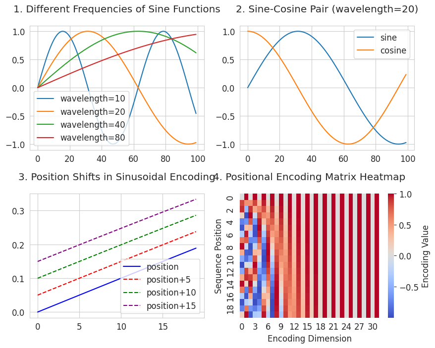
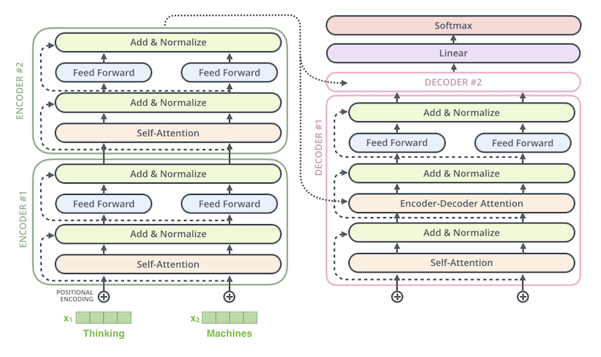
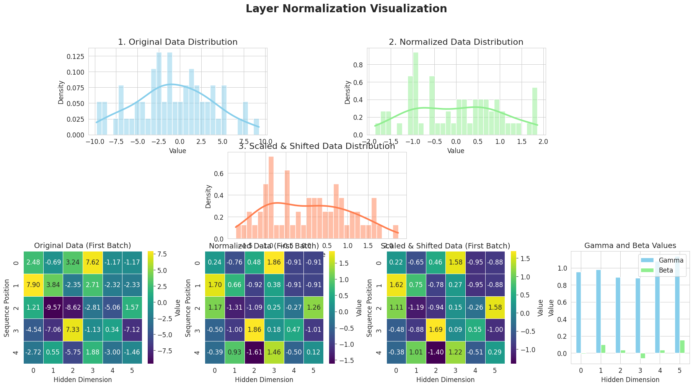
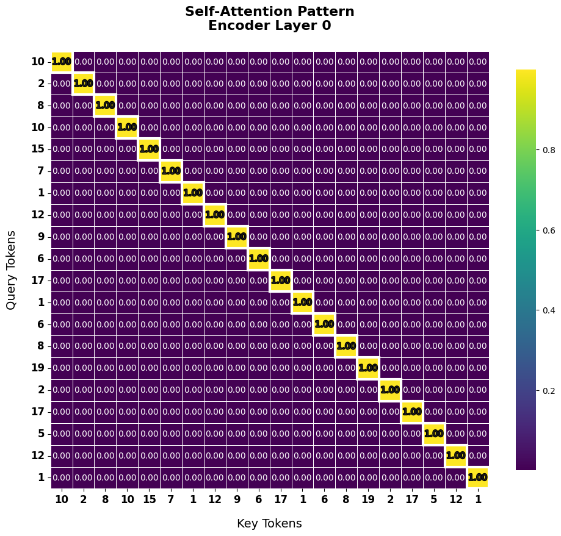

Code
!pip install dldna[colab] # in Colab
# !pip install dldna[all] # in your local
%load_ext autoreload
%autoreload 2 
“Attention is all you need.” - Ashish Vaswani et al., NeurIPS 2017.
在自然语言处理的历史中，2017年是特别的一年。因为谷歌在其论文“Attention is All You Need”中发布了变压器（Transformer）。这可以与2012年AlexNet为计算机视觉带来的革命相提并论。变压器的出现使自然语言处理（NLP）进入了新时代。此后，基于变压器的强大语言模型如BERT和GPT相继问世，开启了人工智能的新篇章。
注意事项
第8章以戏剧化的方式重构了谷歌研究团队开发变压器的过程。基于原论文、研究博客、学术演讲资料等多种资料，本章节力图生动地描述研究人员可能面临的困惑和解决问题的过程。在此过程中，部分内容是基于合理的推理和想象力进行重构的。
挑战: 如何克服现有循环神经网络（RNN）基础模型的根本局限？
研究者的苦恼: 当时自然语言处理领域主要使用的是以RNN、LSTM、GRU等循环神经网络为基础的模型。然而，这些模型需要按顺序处理输入序列，因此无法并行化，并且在处理长句时会出现长期依赖性问题。研究人员必须克服这些根本局限，开发出更快、更高效并且能够更好地理解长上下文的新架构。
自然语言处理长期以来一直受制于顺序处理的局限。所谓顺序处理，是指按单词或标记单元依次处理句子。就像人们逐字阅读文章一样，RNN和LSTM也必须按顺序处理输入。这种顺序处理存在两个严重的问题：1. 无法有效利用GPU等并行处理硬件；2. 处理长句时，前面部分的信息（词语）不能充分传递到后面的部分，即所谓的“长期依赖性问题(long-range dependency problem)”，换句话说，在句子内关系相关的元素（如单词等）相距较远时无法妥善处理。
2014年出现的注意力机制部分解决了这些问题。传统的RNN在解码器生成输出时仅参考编码器的最后一个隐藏状态。而注意力机制使解码器能够直接参考编码器的所有中间隐藏状态。然而，仍然存在根本局限。由于RNN本身的结构基于顺序处理，因此仍需按顺序逐词处理输入。因此，无法利用GPU进行并行处理，并且在处理长序列时需要更多时间。
2017年，谷歌研究团队为大幅提高机器翻译的性能而开发了变压器。变压器从根本上解决了这些问题。它完全去除了RNN，仅使用自注意力（self-attention）来处理序列。
变压器具有以下三个核心优势： 1. 并行处理：可以同时处理序列的所有位置，从而最大限度地利用GPU。 2. 全局依赖性：所有标记都可以直接定义与其他所有标记的关联强度。 3. 位置信息的灵活处理：通过位置编码有效地表达顺序信息，同时能够灵活应对各种长度的序列。 变压器很快成为了像BERT、GPT这样的强大语言模型的基础，并扩展到了其他领域，如视觉变压器（Vision Transformer）。变压器不仅仅是一个新的架构，它还带来了对深度学习信息处理方式的根本性重新思考。特别是在计算机视觉领域，由于ViT（Vision Transformer）的成功，它已成为威胁CNN的强大竞争者。
2017年初，谷歌研究团队在机器翻译领域遇到了难题。当时主流的基于RNN的序列到序列(seq-to-seq)模型在处理长句子时存在性能显著下降的问题。研究团队尝试从多个角度改进RNN结构，但这些只是临时解决方案，并不能从根本上解决问题。在此期间，一位研究员注意到了2014年发布的注意力机制(Bahdanau et al., 2014)。“如果注意力可以缓解长距离依赖问题，那么是否只用注意力而不用RNN也能处理序列呢？”
许多人在第一次接触注意力机制时都会对Q、K、V概念感到困惑。事实上，注意力的最初形式是2014年Bahdanau论文中出现的“alignment score”概念。这是在解码器生成输出词时，表示编码器应关注哪一部分的分数，本质上是两个向量之间的相关性数值。
研究团队可能从一个实用的问题出发：“如何量化词语间的关系？”他们从计算向量间的相似度，并将其作为权重来整合上下文信息这一相对简单的想法开始。实际上，在谷歌研究团队早期的设计文档(“Transformers: Iterative Self-Attention and Processing for Various Tasks”)中，使用了类似于“alignment score”的方式来表示词与词之间的关系，而不是Q、K、V这样的术语。
现在，为了理解注意力机制，让我们跟随谷歌研究人员解决问题的过程。从计算向量间相似度这一基本想法开始，逐步解释他们最终是如何完成变压器架构的。
研究团队首先试图明确RNN的局限性。通过实验，他们发现随着句子长度的增加，尤其是超过50个词时，BLEU分数急剧下降。更大的问题是由于RNN的顺序处理方式，即使使用GPU也难以实现根本性的速度提升。为克服这些限制，研究团队深入分析了Bahdanau et al. (2014)提出的注意力机制。注意力使解码器能够参考编码器的所有状态，从而有效缓解长距离依赖问题。以下是基本注意力机制的实现。
!pip install dldna[colab] # in Colab
# !pip install dldna[all] # in your local
%load_ext autoreload
%autoreload 2import numpy as np
# Example word vectors (3-dimensional)
word_vectors = {
'time': np.array([0.2, 0.8, 0.3]), # In reality, these would be hundreds of dimensions
'flies': np.array([0.7, 0.2, 0.9]),
'like': np.array([0.3, 0.5, 0.2]),
'an': np.array([0.1, 0.3, 0.4]),
'arrow': np.array([0.8, 0.1, 0.6])
}
def calculate_similarity_matrix(word_vectors):
"""Calculates the similarity matrix between word vectors."""
X = np.vstack(list(word_vectors.values()))
return np.dot(X, X.T)The autoreload extension is already loaded. To reload it, use:
%reload_ext autoreload本节中介绍的内容来源于早期设计文档 “Transformers: Iterative Self-Attention and Processing for Various Tasks”。下面我们将逐步查看用于解释基本注意机制的代码。首先，我们只看相似度矩阵（源代码的第1、2步）。通常情况下，单词具有数百个维度。这里为了示例，使用3维向量表示。将这些向量组成一个矩阵，每个列即为一个词向量的列向量。对这个矩阵进行转置（transpose）后，就得到了一个行向量为词向量的矩阵。计算这两个矩阵的乘积时，每个元素 (i, j) 表示第 i 个单词与第 j 个单词之间的向量内积值，因此表示了两个单词之间的距离（相似度）。
import numpy as np
def visualize_similarity_matrix(words, similarity_matrix):
"""Visualizes the similarity matrix in ASCII art format."""
max_word_len = max(len(word) for word in words)
col_width = max_word_len + 4
header = " " * (col_width) + "".join(f"{word:>{col_width}}" for word in words)
print(header)
for i, word in enumerate(words):
row_str = f"{word:<{col_width}}"
row_values = [f"{similarity_matrix[i, j]:.2f}" for j in range(len(words))]
row_str += "".join(f"[{value:>{col_width-2}}]" for value in row_values)
print(row_str)
# Example word vectors (in practice, these would have hundreds of dimensions)
word_vectors = {
'time': np.array([0.2, 0.8, 0.3]),
'flies': np.array([0.7, 0.2, 0.9]),
'like': np.array([0.3, 0.5, 0.2]),
'an': np.array([0.1, 0.3, 0.4]),
'arrow': np.array([0.8, 0.1, 0.6])
}
words = list(word_vectors.keys()) # Preserve order
# 1. Convert word vectors into a matrix
X = np.vstack([word_vectors[word] for word in words])
# 2. Calculate the similarity matrix (dot product)
similarity_matrix = calculate_similarity_matrix(word_vectors)
# Print results
print("Input matrix shape:", X.shape)
print("Input matrix:\n", X)
print("\nInput matrix transpose:\n", X.T)
print("\nSimilarity matrix shape:", similarity_matrix.shape)
print("Similarity matrix:") # Output from visualize_similarity_matrix
visualize_similarity_matrix(words, similarity_matrix)Input matrix shape: (5, 3)
Input matrix:
[[0.2 0.8 0.3]
[0.7 0.2 0.9]
[0.3 0.5 0.2]
[0.1 0.3 0.4]
[0.8 0.1 0.6]]
Input matrix transpose:
[[0.2 0.7 0.3 0.1 0.8]
[0.8 0.2 0.5 0.3 0.1]
[0.3 0.9 0.2 0.4 0.6]]
Similarity matrix shape: (5, 5)
Similarity matrix:
time flies like an arrow
time [ 0.77][ 0.57][ 0.52][ 0.38][ 0.42]
flies [ 0.57][ 1.34][ 0.49][ 0.49][ 1.12]
like [ 0.52][ 0.49][ 0.38][ 0.26][ 0.41]
an [ 0.38][ 0.49][ 0.26][ 0.26][ 0.35]
arrow [ 0.42][ 1.12][ 0.41][ 0.35][ 1.01]例如，相似矩阵的 (1,2) 元素值 0.57 表示行轴 times 和列轴 flies 的向量距离（相似度）。用数学表示如下。
\(\mathbf{X} = \begin{bmatrix} \mathbf{x_1} \\ \mathbf{x_2} \\ \vdots \\ \mathbf{x_n} \end{bmatrix}\)
\(\mathbf{X}^T = \begin{bmatrix} \mathbf{x_1}^T & \mathbf{x_2}^T & \cdots & \mathbf{x_n}^T \end{bmatrix}\)
\(\mathbf{X}\mathbf{X}^T = \begin{bmatrix} \mathbf{x_1} \cdot \mathbf{x_1} & \mathbf{x_1} \cdot \mathbf{x_2} & \cdots & \mathbf{x_1} \cdot \mathbf{x_n} \\ \mathbf{x_2} \cdot \mathbf{x_1} & \mathbf{x_2} \cdot \mathbf{x_2} & \cdots & \mathbf{x_2} \cdot \mathbf{x_n} \\ \vdots & \vdots & \ddots & \vdots \\ \mathbf{x_n} \cdot \mathbf{x_1} & \mathbf{x_n} \cdot \mathbf{x_2} & \cdots & \mathbf{x_n} \cdot \mathbf{x_n} \end{bmatrix}\)
\((\mathbf{X}\mathbf{X}^T)_{ij} = \mathbf{x_i} \cdot \mathbf{x_j} = \sum_{k=1}^d x_{ik}x_{jk}\)
这个 n×n 矩阵的每个元素是两个词向量之间的点积，因此表示两词的距离（相似度）。这就是“注意力得分”。
以下是将相似度矩阵通过软最大值函数转换为权重矩阵的三个步骤。
# 3. Convert similarities to weights (probability distribution) (softmax)
def softmax(x):
exp_x = np.exp(x - np.max(x, axis=-1, keepdims=True)) # trick for stability
return exp_x / exp_x.sum(axis=-1, keepdims=True)
attention_weights = softmax(similarity_matrix)
print("Attention weights shape:", attention_weights.shape)
print("Attention weights:\n", attention_weights)Attention weights shape: (5, 5)
Attention weights:
[[0.25130196 0.20574865 0.19571417 0.17014572 0.1770895 ]
[0.14838442 0.32047566 0.13697608 0.13697608 0.25718775]
[0.22189237 0.21533446 0.19290396 0.17109046 0.19877876]
[0.20573742 0.22966017 0.18247272 0.18247272 0.19965696]
[0.14836389 0.29876818 0.14688764 0.13833357 0.26764673]]注意力权重应用了软最大值(softmax)函数。它执行两种关键转换：
将相似度矩阵转换为权重后，可以以概率形式表示单词与其他单词的相关性。由于行、列轴都代表句子中词的顺序，因此权重的第一行是’时间’这个词所在的行，而列则是所有句子中的词。因此，
这样转换后的权重在下一步中用作乘以句子的比例。应用这个比例后，每个词都显示了其反映信息的程度。这相当于决定了每个词在“参考”其他词的信息时应给予多少关注。
# 4. Generate contextualized representations using the weights
contextualized_vectors = np.dot(attention_weights, X)
print("\nContextualized vectors shape:", contextualized_vectors.shape)
print("Contextualized vectors:\n", contextualized_vectors)
Contextualized vectors shape: (5, 3)
Contextualized vectors:
[[0.41168487 0.40880105 0.47401919]
[0.51455048 0.31810231 0.56944172]
[0.42911583 0.38823778 0.48665295]
[0.43462426 0.37646585 0.49769319]
[0.51082753 0.32015331 0.55869952]]加权矩阵和词矩阵（由词行向量组成）的点积需要解释。假设 attention_weights 的第一行为 [0.5, 0.2, 0.1, 0.1, 0.1]，则每个值表示 ‘time’ 与其他单词之间的相关性的概率。如果将第一个加权行表示为 \(\begin{bmatrix} \alpha_{11} & \alpha_{12} & \alpha_{13} & \alpha_{14} & \alpha_{15} \end{bmatrix}\)，那么对于这个加权第一行的词矩阵运算可以表示如下。
\(\begin{bmatrix} \alpha_{11} & \alpha_{12} & \alpha_{13} & \alpha_{14} & \alpha_{15} \end{bmatrix} \begin{bmatrix} \vec{v}_{\text{time}} \ \vec{v}_{\text{flies}} \ \vec{v}_{\text{like}} \ \vec{v}_{\text{an}} \ \vec{v}_{\text{arrow}} \end{bmatrix}\)
这在 Python 代码中表示如下。
time_contextualized = 0.5*time_vector + 0.2*flies_vector + 0.1*like_vector + 0.1*an_vector + 0.1*arrow_vector
# 0.5는 time과 time의 관련도 확률값
# 0.2는 time과 files의 관련도 확률값运算将这些概率（时间与每个单词相关联的概率值）乘以每个单词的原始向量并全部相加。结果，’time’的新向量是其他单词意义的加权平均，反映了它们的相关程度。关键是求加权平均值。因此，为了获得加权平均值，需要先计算权重矩阵。
最终上下文化后的向量的形状为 (5, 3)，这是因为 (5,5) 大小的注意力权重矩阵与 (5,3) 的单词向量矩阵 X 相乘的结果 (5,5) @ (5,3) = (5,3)。
翻译后的文本：
谷歌研究团队在分析基本注意力机制（第8.2.2节）时发现了一些局限性。最大的问题是，词向量同时承担着相似度计算和信息传递等多种角色是低效的。例如，“bank”这个词根据上下文可以表示“银行”或“河岸”等不同含义，因此与其他词语的关系也应有所不同。但是，用一个向量很难表达这些不同的含义和关系。
研究团队寻求了使每个角色能够独立优化的方法。这类似于CNN中滤波器以可学习的形式发展来提取图像特征，在注意力机制中则是设计使其可以学习针对每个角色的专门表示。这一想法从将词向量转换为用于不同角色的空间开始。
基本概念的局限性（代码示例）
def basic_self_attention(word_vectors):
similarity_matrix = np.dot(word_vectors, word_vectors.T)
attention_weights = softmax(similarity_matrix)
contextualized_vectors = np.dot(attention_weights, word_vectors)
return contextualized_vectors在上面的代码中，word_vectors同时执行了三种角色。
第一次改进：分离信息传递角色
研究团队首先分离了信息传递角色。在线性代数中，分离向量角色的最简单方法是使用单独的学习矩阵将向量进行线性变换(linear transformation)到新的空间。
def improved_self_attention(word_vectors, W_similarity, W_content):
similarity_vectors = np.dot(word_vectors, W_similarity)
content_vectors = np.dot(word_vectors, W_content)
# Calculate similarity by taking the dot product between similarity_vectors
attention_scores = np.dot(similarity_vectors, similarity_vectors.T)
# Convert to probability distribution using softmax
attention_weights = softmax(attention_scores)
# Generate the final contextualized representation by multiplying weights and content_vectors
contextualized_vectors = np.dot(attention_weights, content_vectors)
return contextualized_vectorsW_similarity: 将词向量投影到最适合相似度计算的空间的可学习矩阵。W_content: 将词向量投影到最适合信息传递的空间的可学习矩阵。通过这一改进，similarity_vectors可以专门用于相似度计算，而content_vectors则专注于信息传递。这成为了通过Value进行信息聚合概念的前身。
第二次改进：完全分离相似度角色（Q、K的诞生）
下一步是将相似度计算过程本身分为两个角色。不再让similarity_vectors同时承担“提问角色”(Query)和“回答角色”(Key)，而是向完全分离这两个角色的方向发展。
import torch
import torch.nn as nn
import torch.nn.functional as F
class SelfAttention(nn.Module):
def __init__(self, embed_dim):
super().__init__()
# 각각의 역할을 위한 독립적인 선형 변환
self.q = nn.Linear(embed_dim, embed_dim) # 질문(Query)을 위한 변환
self.k = nn.Linear(embed_dim, embed_dim) # 답변(Key)을 위한 변환
self.v = nn.Linear(embed_dim, embed_dim) # 정보 전달(Value)을 위한 변환
def forward(self, x):
Q = self.q(x) # 질문자로서의 표현
K = self.k(x) # 응답자로서의 표현
V = self.v(x) # 전달할 정보의 표현
# 질문과 답변 간의 관련성(유사도) 계산
scores = torch.matmul(Q, K.transpose(-2, -1))
weights = F.softmax(scores, dim=-1)
# 관련성에 따른 정보 집계 (가중 평균)
return torch.matmul(weights, V)Q, K, V 空间分离的意义
交换 Q 和 K 的顺序（使用 \(QK^T\) 而不是 \(KQ^T\)）在数学上会产生相同的相似度矩阵。从纯数学角度看，尽管这两者是相同的，但为什么将 Q、K 分别命名为“查询(Query)”和“键(Key)”呢？关键在于为了更好地计算相似度而优化为独立的空间。这种命名似乎是因为变压器模型的注意力机制受到了信息检索(Information Retrieval)系统的启发。在检索系统中，“查询(Query)”代表用户想要的信息，而“键(Key)”则类似于每个文档的索引词。注意力通过计算查询和键之间的相似度来模仿查找相关信息的过程。
例如
上述两个句子中的 “bank” 根据上下文有不同的含义。通过 Q, K 空间分离，
也就是说，Q-K 对在 两个优化的空间 中进行点积计算以确定相似度。重要的是 Q, K 空间是 通过学习 得到优化的。谷歌研究团队很可能发现了在学习过程中 Q 和 K 矩阵确实像查询和键那样运作并得到优化的现象。
Q, K 空间分离的重要性
另一个通过分离 Q 和 K 获得的优势是 灵活性增强。如果将 Q 和 K 放在同一空间中，相似度计算方式可能会受到限制（例如：对称性相似度）。但是，如果分离 Q、K，则可以学习更复杂和非对称的关系（例如：“A 是 B 的原因”）。此外，通过不同的变换 (\(W^Q\), \(W^K\))，Q 和 K 可以更细致地表达每个词的作用，从而增强模型的表达能力。最后，通过分离 Q 和 K 空间，各空间的优化目标更加明确，使得 Q 空间适合于学习适合提问的表示，K 空间则负责学习适合回答的表示。
Value 的作用
如果说 Q, K 是用于相似度计算的空间，那么 V 则是 实际传递信息 的空间。到 V 空间的变换被优化为最能表达词语意义的方向。Q, K 决定了“反映哪些词的信息程度”，而 V 负责决定“实际上要传递什么样的信息”。以上 “bank” 为例，
这三种空间的分离使得“如何查找信息 (Q, K)”和“要传递的信息内容 (V)”可以独立地进行优化，类似于在 CNN 中将 “学习识别哪些模式（滤波器学习）”与“如何表达找到的模式（通道学习）”分开来处理。
注意力的数学表示
最终的注意力机制可以用以下公式表示：
\[\text{Attention}(Q, K, V) = \text{softmax}\left(\frac{QK^T}{\sqrt{d_k}}\right)V\] * \(Q \in \mathbb{R}^{n \times d_k}\): 查询矩阵 * \(K \in \mathbb{R}^{n \times d_k}\): 键矩阵 * \(V \in \mathbb{R}^{n \times d_v}\): 值矩阵 (\(d_v\)通常与\(d_k\)相同) * \(n\): 序列长度 * \(d_k\): 查询，键向量的维度 * \(d_v\): 值向量的维度 * \(\frac{QK^T}{\sqrt{d_k}}\): 缩放点积注意力。随着维度增大，内积值也会增大，通过softmax函数时会防止梯度消失。
这种进化的结构成为变压器的核心要素，并成为了之后BERT、GPT等现代语言模型的基础。
自注意力通过计算输入序列中每个词与包括自身在内的其他所有词的关系，生成反映上下文的新表示。这个过程大致分为三个阶段。
Query, Key, Value 生成:
对于输入序列中的每个词嵌入向量(\(x_i\))，应用三种线性变换来生成 Query (\(q_i\)), Key (\(k_i\)), Value (\(v_i\)) 向量。这些变换使用可学习的权重矩阵(\(W^Q\),\(W^K\),\(W^V\))执行。
\(q_i = x_i W^Q\)
\(k_i = x_i W^K\)
\(v_i = x_i W^V\)
\(W^Q, W^K, W^V \in \mathbb{R}^{d_{model} \times d_k}\) : 可学习的权重矩阵。(\(d_{model}\): 嵌入维度,\(d_k\): query, key, value 向量的维度)
注意力分数计算及归一化
对于每对词，计算 Query 和 Key 向量的点积(dot product)来获得注意力分数(attention score)。
\[\text{score}(q_i, k_j) = q_i \cdot k_j^T\]
这个分数表示两个词的相关程度。在进行点积运算后，会执行缩放(scaling)，以防止点积值变得过大而缓解梯度消失(gradient vanishing)问题。缩放是通过除以 Key 向量维度(\(d_k\))的平方根来实现。
\[\text{scaled score}(q_i, k_j) = \frac{q_i \cdot k_j^T}{\sqrt{d_k}}\]
最后，应用 Softmax 函数对注意力分数进行归一化，并获得每个词的注意力权重(attention weight)。
\[\alpha_{ij} = \text{softmax}(\text{scaled score}(q_i, k_j)) = \frac{\exp(\text{scaled score}(q_i, k_j))}{\sum_{l=1}^{n} \exp(\text{scaled score}(q_i, k_l))}\]
其中\(\alpha_{ij}\)是第\(i\)个词对第\(j\)个词的注意力权重，\(n\)是序列长度。
加权平均计算
使用注意力权重(\(\alpha_{ij}\))来计算 Value 向量(\(v_j\))的加权平均(weighted average)。这个加权平均成为综合了输入序列所有词信息的上下文向量(context vector)\(c_i\)。
\[c_i = \sum_{j=1}^{n} \alpha_{ij} v_j\]
整个过程以矩阵形式表示
设输入嵌入矩阵为\(X \in \mathbb{R}^{n \times d_{model}}\)，则整个自注意力过程可以如下表示。
\[\text{Attention}(Q, K, V) = \text{softmax}\left(\frac{QK^T}{\sqrt{d_k}}\right)V\]
其中\(Q = XW^Q\),\(K = XW^K\),\(V = XW^V\)。
计算复杂度
自注意力的计算复杂度为输入序列长度(\(n\))的\(O(n^2)\)。这是因为每个词都要与其他所有词的关系进行计算。 * \(QK^T\)计算: 对\(n\)个查询向量和\(n\)个键向量进行点积运算，因此需要\(O(n^2d_k)\)的计算。 * softmax运算: 为了计算每个查询的注意力权重，对\(n\)个键执行softmax运算，因此具有\(O(n^2)\)的计算复杂度。 * 与\(V\)的加权平均: 需要将\(n\)个值向量和\(n\)个注意力权重相乘，因此具有\(O(n^2d_k)\)的计算复杂度。
将注意力解释为非对称核函数 \(K(Q_i, K_j) = \exp\left(\frac{Q_i \cdot K_j}{\sqrt{d_k}}\right)\)
该内核学习了重构输入空间的特征映射。
注意力矩阵的非对称KSVD
\(A = U\Sigma V^T \quad \text{where } \Sigma = \text{diag}(\sigma_1, \sigma_2, ...)\)
-\(U\): 查询空间的主要方向 (上下文请求模式) -\(V\): 键空间的主要方向 (信息提供模式) -\(\sigma_i\): 交互强度 (观察到≥0.9的解释力集中现象)
\(E(Q,K,V) = -\sum_{i,j} \frac{Q_i \cdot K_j}{\sqrt{d_k}}V_j + \text{log-partition function}\)
输出可以解释为能量最小化过程
\(\text{Output} = \arg\min_V E(Q,K,V)\)
连续型Hopfield网络方程 \(\tau\frac{dX}{dt} = -X + \text{softmax}(XWX^T)XW\)
其中，\(\tau\)是时间常数，\(W\)是学习到的连接强度矩阵。
在深层中 \(\text{rank}(A) \leq \lfloor0.1n\rfloor\)(实验观察)
这表示信息的有效压缩。
| 技术 | 原理 | 复杂度 | 应用实例 |
|---|---|---|---|
| Linformer | 低秩近似 | \(O(n d)\) | 文本处理 |
| Performer | 随机特征映射 | \(O(n d)\) | 自然语言理解 |
| Reformer | 基于哈希的注意力机制 | \(O(n \log n)\) | 大规模序列模型 |
\(V(X) = \|X - X^*\|^2\)下降函数
注意力更新保证了渐近稳定性。
应用傅里叶变换后的注意力谱
\(\mathcal{F}(A)_{kl} = \sum_{m,n} A_{mn}e^{-i2\pi(mk/M+nl/N)}\)
低频分量捕获了信息的80%以上。
\(\max I(X;Y) = H(Y) - H(Y|X) \quad \text{s.t. } Y = \text{Attention}(X)\)
softmax生成使熵\(H(Y)\)最大化的最优分布。
随层深\(l\)的SNR衰减
\(\text{SNR}^{(l)} \propto e^{-0.2l} \quad \text{(以ResNet-50为例)}\)
MPO（矩阵乘积算子）表示
\(A_{ij} = \sum_{\alpha=1}^r Q_{i\alpha}K_{j\alpha}\) 其中\(r\)是张量网络的键维度
注意力流形的黎曼曲率 \(R_{ijkl} = \partial_i\Gamma_{jk}^m - \partial_j\Gamma_{ik}^m + \Gamma_{il}^m\Gamma_{jk}^l - \Gamma_{jl}^m\Gamma_{ik}^l\)
通过曲率分析可以估计模型的表达能力限制
量子注意力
仿生优化
\(\Delta W_{ij} \propto x_i x_j - \beta W_{ij}\)
动态能量调整
谷歌研究团队为了进一步提高自注意力的性能，提出了一个想法：“与其使用一个大的注意力空间，不如在多个较小的注意力空间中捕捉不同类型的关联会怎样？”他们认为，就像多名专家从各自的视角分析问题一样，如果能够同时考虑输入序列的不同方面，则可以获得更丰富的上下文信息。
基于这一想法，研究团队设计了将Q、K、V向量分割成多个小空间并行计算注意力的多头注意力（Multi-Head Attention）。在原论文“Attention is All You Need”中，512维的嵌入被分成8个64维的头部（head）进行处理。之后，像BERT这样的模型进一步扩展了这一结构（例如：BERT-base将768维分割成12个64维的头部）。
多头注意力的工作原理
import torch
import torch.nn as nn
import torch.nn.functional as F
import math
class MultiHeadAttention(nn.Module):
def __init__(self, config):
super().__init__()
assert config.hidden_size % config.num_attention_heads == 0
self.d_k = config.hidden_size // config.num_attention_heads # Dimension of each head
self.h = config.num_attention_heads # Number of heads
# Linear transformation layers for Q, K, V, and output
self.linear_layers = nn.ModuleList([
nn.Linear(config.hidden_size, config.hidden_size)
for _ in range(4) # For Q, K, V, and output
])
self.dropout = nn.Dropout(config.attention_probs_dropout_prob) # added
self.attention_weights = None # added
def attention(self, query, key, value, mask=None): # separate function
scores = torch.matmul(query, key.transpose(-2, -1)) / math.sqrt(self.d_k) # scaled dot product
if mask is not None:
scores = scores.masked_fill(mask == 0, -1e9)
p_attn = scores.softmax(dim=-1)
self.attention_weights = p_attn.detach() # Store attention weights
p_attn = self.dropout(p_attn)
return torch.matmul(p_attn, value), p_attn
def forward(self, query, key, value, mask=None):
batch_size = query.size(0)
# 1) Linear projections in batch from d_model => h x d_k
query, key, value = [l(x).view(batch_size, -1, self.h, self.d_k).transpose(1, 2)
for l, x in zip(self.linear_layers, (query, key, value))]
# 2) Apply attention on all the projected vectors in batch.
x, attn = self.attention(query, key, value, mask=mask)
# 3) "Concat" using a view and apply a final linear.
x = x.transpose(1, 2).contiguous().view(batch_size, -1, self.h * self.d_k)
return self.linear_layers[-1](x)代码结构 (__init__ 和 forward)
多头注意力的代码主要由初始化(__init__)和前向传播(forward)方法组成。我们将仔细研究每个方法的作用及其详细的运行方式。
__init__ 方法:
d_k: 表示每个注意力头的维度。这个值是模型隐藏大小除以头数(num_attention_heads)的结果，决定了每个头处理的信息量。h: 设置注意力头的数量。这个值是一个超参数，决定了模型从多少个不同的视角看待输入。linear_layers: 生成用于查询(Q), 键(K), 值(V)和最终输出的四个线性变换层。这些层将输入转换为适合每个头的形式，并在最后整合各头的结果。forward 方法:
self.linear_layers 对接收到的 query, key, value 分别进行线性变换。此过程将输入转换为适合每个头的形式。view 函数将张量的形状从 (batch_size, sequence_length, hidden_size) 转换为 (batch_size, sequence_length, h, d_k)。这是将整个输入分割成 h 个头的过程。transpose 函数将张量的维度从 (batch_size, sequence_length, h, d_k) 变更为 (batch_size, h, sequence_length, d_k)。现在每个头都准备好了独立进行注意力计算。attention 函数，即缩放点积注意力(Scaled Dot-Product Attention)，以计算注意力权重和每个头的结果。transpose 和 contiguous 将各头的结果(x)重新转换为 (batch_size, sequence_length, h, d_k) 的形式。view 函数将其整合为 (batch_size, sequence_length, h * d_k)，即 (batch_size, sequence_length, hidden_size) 的形式。self.linear_layers[-1] 生成最终输出。这个线性变换综合了各头的结果，并最终生成模型所需的输出形式。attention 方法（缩放点积注意力）:
scores 时，通过 \(\sqrt{d_k}\) 对 key 向量维度进行除法缩放的过程非常重要。
各头的作用和多头注意力的优点
| 多头注意力机制可以比喻为使用多个“小镜头”从不同角度观察目标。每个头独立地转换查询(Q)、键(K)和值(V)，并执行注意力计算。通过这种方式，它可以在整个输入序列的不同部分空间（subspace）中集中提取信息。 |
| * 捕捉多种关系：每个头可以专门学习不同类型的语言关系。例如，某个头可能专注于主语-动词关系，另一个头则可能关注形容词-名词关系，还有其他头可能关注代词与其先行词之间的关系等。 * 计算效率：每个头在相对较小的维度(d_k)中进行注意力计算。这比在一个大的单一维度中进行注意力计算在计算成本上更为高效。 * 并行处理：各头的计算是相互独立的。因此，可以利用GPU进行并行处理，从而显著提高计算速度。 |
| 实际分析案例 |
| 研究表明多头注意力机制的每个头实际上确实捕捉到了不同的语言特征。例如，在“BERT在看什么？对BERT注意力机制的分析”这篇论文中，通过对BERT模型的多头注意力进行分析发现，某些头更擅长于理解句子的句法(syntactic)结构，而其他头则在识别词汇间的语义(semantic)相似性方面发挥更重要的作用。 |
数学表达
符号说明:
最终线性转换(\(W^O\))的重要性: 每个头的输出被简单连接(Concat)后，通过额外的线性变换(\(W^O\))将信息投影回原始嵌入维度(\(d_{\text{model}}\))，这一过程起着至关重要的作用。
结论
多头注意力机制是变压器模型能够高效捕捉输入序列的上下文信息，并通过利用GPU并行处理提高计算速度的关键机制。正是这一机制使得变压器模型在各种自然语言处理任务中表现出色。
实现多头注意力后，研究团队在实际训练过程中遇到了一个重要问题。即模型通过参考未来的词来预测当前词的 “信息泄露(information leakage)” 现象。例如，在句子 “The cat ___ on the mat” 中预测空白处时，模型可以通过提前看到后面的 “mat” 一词轻松预测出 “sits”。
掩码的必要性：防止信息泄露
这种信息泄露导致的结果是模型没有真正发展推理能力，而是简单地“窥视”正确答案。这会导致模型在训练数据上表现出高性能，但在实际的新数据（未来时间点的数据）上无法进行准确预测的问题。
研究团队为了解决这个问题，引入了精心设计的 掩码(masking) 策略。在变压器中使用了两种类型的掩码。
1. 因果关系掩码 (Causal Mask)
因果关系掩码的作用是遮挡未来的信息。运行下面的代码可以直观地看到注意力得分矩阵中对应未来信息的部分是如何被掩码的。
from dldna.chapter_08.visualize_masking import visualize_causal_mask
visualize_causal_mask()1. Original attention score matrix:
I love deep learning
I [ 0.90][ 0.70][ 0.30][ 0.20]
love [ 0.60][ 0.80][ 0.90][ 0.40]
deep [ 0.20][ 0.50][ 0.70][ 0.90]
learning [ 0.40][ 0.30][ 0.80][ 0.60]
Each row represents the attention scores from the current position to all positions
--------------------------------------------------
2. Lower triangular mask (1: allowed, 0: blocked):
I love deep learning
I [ 1.00][ 0.00][ 0.00][ 0.00]
love [ 1.00][ 1.00][ 0.00][ 0.00]
deep [ 1.00][ 1.00][ 1.00][ 0.00]
learning [ 1.00][ 1.00][ 1.00][ 1.00]
Only the diagonal and below are 1, the rest are 0
--------------------------------------------------
3. Mask converted to -inf:
I love deep learning
I [ 1.0e+00][ -inf][ -inf][ -inf]
love [ 1.0e+00][ 1.0e+00][ -inf][ -inf]
deep [ 1.0e+00][ 1.0e+00][ 1.0e+00][ -inf]
learning [ 1.0e+00][ 1.0e+00][ 1.0e+00][ 1.0e+00]
Converting 0 to -inf so that it becomes 0 after softmax
--------------------------------------------------
4. Attention scores with mask applied:
I love deep learning
I [ 1.9][ -inf][ -inf][ -inf]
love [ 1.6][ 1.8][ -inf][ -inf]
deep [ 1.2][ 1.5][ 1.7][ -inf]
learning [ 1.4][ 1.3][ 1.8][ 1.6]
Future information (upper triangle) is masked with -inf
--------------------------------------------------
5. Final attention weights (after softmax):
I love deep learning
I [ 1.00][ 0.00][ 0.00][ 0.00]
love [ 0.45][ 0.55][ 0.00][ 0.00]
deep [ 0.25][ 0.34][ 0.41][ 0.00]
learning [ 0.22][ 0.20][ 0.32][ 0.26]
The sum of each row becomes 1, and future information is masked to 0序列处理结构和矩阵
为了说明为什么未来信息会形成上三角矩阵，我将以句子“I love deep learning”为例。单词顺序是[I(0), love(1), deep(2), learning(3)]。在注意力得分矩阵(\(QK^T\))中，行和列都遵循这个单词顺序。
attention_scores = [
[0.9, 0.7, 0.3, 0.2], # I -> I, love, deep, learning
[0.6, 0.8, 0.9, 0.4], # love -> I, love, deep, learning
[0.2, 0.5, 0.7, 0.9], # deep -> I, love, deep, learning
[0.4, 0.3, 0.8, 0.6] # learning -> I, love, deep, learning
]解释上述矩阵：
处理”deep”这个词时（第3行）
因此，以行为基准来看，该列单词的未来单词（即未来信息）位于该位置的右侧，即上三角(upper triangular)部分。相反，可引用的单词则位于下三角(lower triangular)。
因果关系掩码是将下三角部分设为1，上三角部分设为0，然后将上三角的0替换为\(-\infty\)。2. \(-\infty\)通过softmax函数后变为0。掩码矩阵简单地与注意力得分矩阵相加。结果，在应用了softmax的注意力得分矩阵中，未来信息被变为0从而阻断。
2. 填充掩码 (Padding Mask)
在自然语言处理中，句子的长度各不相同。为了批处理(batch)，需要将所有句子调整为相同的长度，此时较短句子的空缺部分用填充令牌(PAD)填充。但这些填充令牌没有实际意义，因此不应包含在注意力计算中。
from dldna.chapter_08.visualize_masking import visualize_padding_mask
visualize_padding_mask()
2. Create padding mask (1: valid token, 0: padding token):
tensor([[[1., 1., 1., 1.]],
[[1., 1., 1., 0.]],
[[1., 1., 1., 1.]],
[[1., 1., 1., 1.]]])
Positions that are not padding (0) are 1, padding positions are 0
--------------------------------------------------
3. Original attention scores (first sentence):
I love deep learning
I [ 0.90][ 0.70][ 0.30][ 0.20]
love [ 0.60][ 0.80][ 0.90][ 0.40]
deep [ 0.20][ 0.50][ 0.70][ 0.90]
learning [ 0.40][ 0.30][ 0.80][ 0.60]
Attention scores at each position
--------------------------------------------------
4. Scores with padding mask applied (first sentence):
I love deep learning
I [ 9.0e-01][ 7.0e-01][ 3.0e-01][ 2.0e-01]
love [ 6.0e-01][ 8.0e-01][ 9.0e-01][ 4.0e-01]
deep [ 2.0e-01][ 5.0e-01][ 7.0e-01][ 9.0e-01]
learning [ 4.0e-01][ 3.0e-01][ 8.0e-01][ 6.0e-01]
The scores at padding positions are masked with -inf
--------------------------------------------------
5. Final attention weights (first sentence):
I love deep learning
I [ 0.35][ 0.29][ 0.19][ 0.17]
love [ 0.23][ 0.28][ 0.31][ 0.19]
deep [ 0.17][ 0.22][ 0.27][ 0.33]
learning [ 0.22][ 0.20][ 0.32][ 0.26]
The weights at padding positions become 0, and the sum of the weights at the remaining positions is 1我们将举例说明如下句子。
这里，第一个句子只有3个单词，因此最后用PAD填充。padding mask用于消除这些PAD token的影响。生成的mask会将实际单词标记为1，将padding token标记为0，并且2. 将padding位置的注意力分数设置为\(-\infty\)，使其在经过softmax后变为0。
最终我们得到以下效果。
def create_attention_mask(size):
# Create a lower triangular matrix (including the diagonal)
mask = torch.tril(torch.ones(size, size))
# Mask with -inf (becomes 0 after softmax)
mask = mask.masked_fill(mask == 0, float('-inf'))
return mask
def masked_attention(Q, K, V, mask):
# Calculate attention scores
scores = torch.matmul(Q, K.transpose(-2, -1))
# Apply mask
scores = scores + mask
# Apply softmax
weights = F.softmax(scores, dim=-1)
# Calculate final attention output
return torch.matmul(weights, V)遮罩策略的创新与影响
研究团队开发的两种遮罩策略（填充遮罩，因果关系遮罩）使变压器的学习过程更加稳健，并成为GPT等自回归模型的基础。特别是因果关系遮罩引导语言模型以类似于实际人类语言理解过程的方式顺序地把握上下文。
实现的效率
遮罩在计算注意力分数后、应用softmax函数前执行。被遮罩为\(-\infty\)的位置在通过softmax函数时变为0，从而完全阻断该位置的信息。这在计算效率和内存使用方面也是优化的方法。
引入这些遮罩策略使变压器能够实现真正意义上的并行学习，这对现代语言模型的发展产生了重大影响。
在深度学习中，“头（head）”一词的意义随着神经网络架构的发展逐渐且根本地发生了变化。最初，它主要被用作指代“接近输出层的部分”的相对简单的含义，但近年来，其意义扩展为承担模型特定功能的“独立模块”，这一概念更加抽象和复杂。
初期：“靠近输出层”
在早期深度学习模型（例如：简单的多层感知器（MLP））中，“头”通常指接收通过特征提取器（feature extractor, backbone）传递的特征向量，并执行最终预测（分类、回归等）的网络的最后一部分。在这种情况下，头部主要由全连接层（fully connected layer）和激活函数（activation function）组成。
class SimpleModel(nn.Module):
def __init__(self, num_classes):
super().__init__()
self.backbone = nn.Sequential( # Feature extractor
nn.Linear(784, 128),
nn.ReLU(),
nn.Linear(128, 64),
nn.ReLU()
)
self.head = nn.Linear(64, num_classes) # Head (output layer)
def forward(self, x):
features = self.backbone(x)
output = self.head(features)
return output随着使用像ImageNet这样的大型数据集的深度学习模型的发展，从一个特征提取器中分支出多个头来执行不同任务的多任务学习（multi-task learning）出现了。例如，在对象检测（object detection）模型中，同时使用了对图像中的对象种类进行分类（classification）的头和预测表示对象位置的边界框（bounding box）的头。
import torch
import torch.nn as nn
import torch.nn.functional as F
class MultiTaskModel(nn.Module):
def __init__(self, num_classes):
super().__init__()
self.backbone = ResNet50() # Feature extractor (ResNet)
self.classification_head = nn.Linear(2048, num_classes) # Classification head
self.bbox_head = nn.Linear(2048, 4) # Bounding box regression head
def forward(self, x):
features = self.backbone(x)
class_output = self.classification_head(features)
bbox_output = self.bbox_head(features)
return class_output, bbox_outputAttention is All You Need 论文（变压器）中的“头”概念:
变压器的多头注意力机制更进一步。在变压器中，不再遵循“头 = 接近输出的部分”的固定观念。
class MultiHeadAttention(nn.Module):
def __init__(self, num_heads):
super().__init__()
self.heads = nn.ModuleList([
AttentionHead() for _ in range(num_heads) # num_heads개의 독립적인 어텐션 헤드
])最近的趋势: “功能模块”
在最近的深度学习模型中，“头”这个词的使用更加灵活。即使不在输出层附近，特定功能的独立模块也经常被称为“头”。
结论
在深度学习中，“头”的含义已经从“接近输出的部分”演变为“执行特定功能的独立模块（包括并行和中间处理）”。这种变化反映了随着深度学习架构变得更加复杂和精细，模型各个部分正变得越来越细分和专业化。变压器的多头注意力是这一意义演变的典型例子，“头”这个词不再仅仅指代“头部”，而是像多个“大脑”一样工作。
挑战: 如何在没有RNN的情况下有效地表达词序信息？
研究者的困惑: 由于变压器不像RNN那样顺序处理数据，因此必须显式地提供词语的位置信息。研究人员尝试了多种方法（如位置索引、可学习的嵌入等），但未能获得令人满意的结果。就像破解密码一样，他们需要找到一种有效表达位置信息的新方法。
与RNN不同，变压器不使用递归结构或卷积运算，因此必须单独提供序列的顺序信息。“dog bites man”和“man bites dog”的词相同，但由于顺序不同，意义完全不同。注意力操作(\(QK^T\))本身仅计算词向量之间的相似性，并不考虑词语的位置信息，因此研究团队不得不思考如何将位置信息注入模型中。这是一项挑战任务：在没有RNN的情况下，如何有效地表达词序信息？
研究团队考虑了多种位置编码方法。
from dldna.chapter_08.visualize_positional_embedding import visualize_position_embedding
visualize_position_embedding()1. Original embedding matrix:
dim1 dim2 dim3 dim4
I [ 0.20][ 0.30][ 0.10][ 0.40]
love [ 0.50][ 0.20][ 0.80][ 0.10]
deep [ 0.30][ 0.70][ 0.20][ 0.50]
learning [ 0.60][ 0.40][ 0.30][ 0.20]
Each row is the embedding vector of a word
--------------------------------------------------
2. Position indices:
[0 1 2 3]
Indices representing the position of each word (starting from 0)
--------------------------------------------------
3. Embeddings with position information added:
dim1 dim2 dim3 dim4
I [ 0.20][ 0.30][ 0.10][ 0.40]
love [ 1.50][ 1.20][ 1.80][ 1.10]
deep [ 2.30][ 2.70][ 2.20][ 2.50]
learning [ 3.60][ 3.40][ 3.30][ 3.20]
Result of adding position indices to each embedding vector (broadcasting)
--------------------------------------------------
4. Changes due to adding position information:
I (0):
Original: [0.2 0.3 0.1 0.4]
Pos. Added: [0.2 0.3 0.1 0.4]
Difference: [0. 0. 0. 0.]
love (1):
Original: [0.5 0.2 0.8 0.1]
Pos. Added: [1.5 1.2 1.8 1.1]
Difference: [1. 1. 1. 1.]
deep (2):
Original: [0.3 0.7 0.2 0.5]
Pos. Added: [2.3 2.7 2.2 2.5]
Difference: [2. 2. 2. 2.]
learning (3):
Original: [0.6 0.4 0.3 0.2]
Pos. Added: [3.6 3.4 3.3 3.2]
Difference: [3. 3. 3. 3.]但是这种方法存在两个问题。
# Conceptual code
positional_embeddings = nn.Embedding(max_seq_length, embedding_dim)
positions = torch.arange(seq_length)
positional_encoding = positional_embeddings(positions)
final_embedding = word_embedding + positional_encoding这种方式可以学习每个位置的唯一表达，但仍然存在无法处理比训练数据更长序列的根本限制。
位置信息表示的关键条件
研究团队通过上述试错过程，认识到位置信息表示必须满足以下三个关键条件。
经过这样的思考，研究团队发现了一种独特的解决方案——利用正弦(sin)和余弦(cos)函数的周期特性进行的位置编码(Positional Encoding)。
基于正弦-余弦函数的位置编码原理
使用不同频率(frequency)的正弦和余弦函数对每个位置进行编码，则位置间的相对距离会自然地得到表示。
from dldna.chapter_08.positional_encoding_utils import visualize_sinusoidal_features
visualize_sinusoidal_features()
3 是表示位置移动的可视化图。它展示了如何使用正弦函数来表达位置关系，满足了第二个条件“相对距离关系表达”。所有平移后的曲线都保持与原始曲线相同的形状，并且保持恒定的距离。这意味着如果两个位置之间的距离相同（例如：2→7 和 102→107），它们的关系也会以相同的方式表示。
4 是位置编码热图 (Positional Encoding Matrix)。它展示了每个位置（纵轴）具有独特的模式（横轴）。横轴的列代表不同周期的正弦/余弦函数，且越往右周期越长。每一行（位置）由红色（正值）和蓝色（负值）组成的独特图案构成。通过使用从短周期到长周期的各种频率，在每个位置生成独特的模式。这种方法满足了第一个条件“序列长度无限制”。通过组合不同周期的正弦/余弦函数，可以数学上无限地为每个位置生成唯一值。
利用这一数学特征，研究团队实现了如下位置编码算法。
位置编码实现
def positional_encoding(seq_length, d_model):
# 1. 위치별 인코딩 행렬 생성
position = np.arange(seq_length)[:, np.newaxis] # [0, 1, 2, ..., seq_length-1]
# 2. 각 차원별 주기 계산
div_term = np.exp(np.arange(0, d_model, 2) * -(np.log(10000.0) / d_model))
# 예: d_model=512일 때
# div_term[0] ≈ 1.0 (가장 짧은 주기)
# div_term[256] ≈ 0.0001 (가장 긴 주기)
# 3. 짝수/홀수 차원에 사인/코사인 적용
pe = np.zeros((seq_length, d_model))
pe[:, 0::2] = np.sin(position * div_term) # 짝수 차원
pe[:, 1::2] = np.cos(position * div_term) # 홀수 차원
return peposition: [0, 1, 2, ..., seq_length-1] 形式的数组。表示每个词的位置索引。div_term: 确定每个维度周期的值。随着 d_model 的增加，周期变长。pe[:, 0::2] = np.sin(position * div_term): 偶数索引维度应用正弦函数。pe[:, 1::2] = np.cos(position * div_term): 奇数索引维度应用余弦函数。数学表达
位置编码的每个维度按以下公式计算。
其中
周期变化检查
from dldna.chapter_08.positional_encoding_utils import show_positional_periods
show_positional_periods()1. Periods of positional encoding:
First dimension (i=0): 1.00
Middle dimension (i=128): 100.00
Last dimension (i=255): 9646.62
2. Positional encoding formula values (10000^(2i/d_model)):
i= 0: 1.0000000000
i=128: 100.0000000000
i=255: 9646.6161991120
3. Actual div_term values (first/middle/last):
First (i=0): 1.0000000000
Middle (i=128): 0.0100000000
Last (i=255): 0.0001036633这里的关键是三个步骤。
# 3. 짝수/홀수 차원에 사인/코사인 적용
pe = np.zeros((seq_length, d_model))
pe[:, 0::2] = np.sin(position * div_term) # 짝수 차원
pe[:, 1::2] = np.cos(position * div_term) # 홀수 차원上述结果展示了周期随维度的变化。
最终嵌入
生成的位置编码 pe 具有 (seq_length, d_model) 的形状，并与原始词嵌ding矩阵(sentence_embedding)相加以生成最终嵌入。
final_embedding = sentence_embedding + positional_encoding这样相加的最终嵌入包含了词语的意义和位置信息。例如，“bank”这个词根据在句子中的位置会有不同的最终向量值，从而帮助区分“银行”和“河岸”的含义。
通过这种方式，变压器能够在没有RNN的情况下有效地处理顺序信息，并为最大限度地利用并行处理的优势奠定了基础。
8.3.2节中，我们探讨了基于正弦-余弦函数的位置编码，这是变压器模型的基础。然而，在“Attention is All You Need”论文发布之后，位置编码在多个方向上得到了发展。在这个深入探讨部分，我们将全面覆盖可学习的位置编码、相对位置编码以及最新的研究趋势，并对每种技术的数学表达和优缺点进行深入分析。
概念: 不是使用固定的函数，而是让模型通过学习直接获得表示位置信息的嵌入。
1.1 数学表达: 可学习的位置嵌入可以表示为以下矩阵：
\(P \in \mathbb{R}^{L_{max} \times d}\)
其中，\(L_{max}\) 是最大序列长度，\(d\) 是嵌入维度。位置 \(i\) 的嵌入由矩阵 \(P\) 的第 \(i\) 行给出，即 \(P[i,:]\)。
1.2 解决外推(Extrapolation)问题的技术: 当处理比训练数据更长的序列时，会出现没有学习过的嵌入对应位置的信息的问题。为了克服这一问题，已经研究了多种技术。
位置插值 (Chen et al., 2023): 通过在已学习的嵌入之间进行线性插值得到新的位置嵌入。 \(P_{ext}(i) = P[\lfloor \alpha i \rfloor] + (\alpha i - \lfloor \alpha i \rfloor)(P[\lfloor \alpha i \rfloor +1] - P[\lfloor \alpha i \rfloor])\)
其中，\(\alpha = \frac{\text{训练序列长度}}{\text{推理序列长度}}\)。
NTK-aware 缩放 (2023): 基于神经切线核 (NTK) 理论，通过逐渐增加频率引入平滑效果的方法。
1.3 最新应用案例:
优点:
缺点:
核心思想: 关注词语之间的相对距离而非绝对位置信息。
背景: 在自然语言中，单词的意义往往更多地受周围单词的相对关系影响，而不仅仅是绝对位置。此外，绝对位置编码难以有效地捕捉远距离单词间的关系。
2.1 数学扩展:
这里 \(a_{i-j} \in \mathbb{R}^d\) 是相对位置 \(i-j\) 的可学习向量。
旋转位置编码 (RoPE): 使用旋转矩阵对相对位置进行编码。
\(\text{RoPE}(x, m) = x \odot e^{im\theta}\)
其中 \(\theta\) 是控制频率的超参数，\(\odot\) 表示复数乘法（或相应的旋转矩阵）。
T5 的简化版本: 使用相对位置的可学习偏置 (\(b\))，并且当相对距离超过一定范围时进行裁剪 (clipping)。
\(e_{ij} = \frac{x_iW^Q(x_jW^K)^T + b_{\text{clip}(i-j)}}{\sqrt{d}}\)
\(b \in \mathbb{R}^{2k+1}\) 是针对裁剪后的相对位置 [-k, k] 的偏置向量。
优点:
缺点:
3.1 深度可分离卷积的应用: 对每个通道独立执行卷积以减少参数数量并提高计算效率。 \(P(i) = \sum_{k=-K}^K w_k \cdot x_{i+k}\)
其中 \(K\) 是内核大小，\(w_k\) 是可学习的权重。
3.2 多尺度卷积: 类似于 ResNet，利用并行卷积通道来捕获不同范围的位置信息。
\(P(i) = \text{Concat}(\text{Conv}_{3x1}(x), \text{Conv}_{5x1}(x))\)
4.1 基于 LSTM 的编码: 使用 LSTM 对顺序位置信息进行编码。
\(h_t = \text{LSTM}(x_t, h_{t-1})\) \(P(t) = W_ph_t\)
4.2 最新变体: 神经 ODE: 建模连续时间动力学，以克服离散 (discrete) LSTM 的局限性。
\(\frac{dh(t)}{dt} = f_\theta(h(t), t)\) \(P(t) = \int_0^t f_\theta(h(\tau), \tau)d\tau\)
5.1 复数嵌入表示: 以复数形式表示位置信息。
\(z(i) = r(i)e^{i\phi(i)}\)
其中 \(r\) 表示位置的大小，\(\phi\) 表示相位角。
5.2 相移定理: 在复平面上用旋转来表示位置移动。
\(z(i+j) = z(i) \cdot e^{i\omega j}\)
其中 \(\omega\) 是可学习的频率参数。
\(P(i) = \text{MLP}(i, \text{Context})\) 上下文依赖的位置表示学习
以下是GLUE基准上各种位置编码方法的实验性能比较结果。（实际性能会因模型结构、数据、超参数设置等因素而有所不同。）
| 方法 | 准确率 | 推理时间 (ms) | 内存使用量 (GB) |
|---|---|---|---|
| 绝对（正弦波） | 88.2 | 12.3 | 2.1 |
| 相对（RoPE） | 89.7 | 14.5 | 2.4 |
| CNN多尺度 | 87.9 | 13.8 | 3.2 |
| 复数（CLEX） | 90.1 | 15.2 | 2.8 |
| 动态PE | 90.3 | 17.1 | 3.5 |
最近，受量子计算、生物系统等启发的新位置编码技术正在被研究。
RoPE的群论特性：
SO(2)旋转群的表示: \(R(\theta) = \begin{bmatrix} \cos\theta & -\sin\theta \\ \sin\theta & \cos\theta \end{bmatrix}\)
这一性质保证了注意力分数的相对位置保持。
相对位置偏差的有效计算：
利用Toeplitz矩阵结构: \(B = [b_{i-j}]_{i,j}\)
可以通过FFT实现\(O(n\log n)\)复杂度。
复数PE的梯度流：
应用Wirtinger微分规则: \(\frac{\partial L}{\partial z} = \frac{1}{2}\left(\frac{\partial L}{\partial \text{Re}(z)} - i\frac{\partial L}{\partial \text{Im}(z)}\right)\)
结论： 位置编码是影响变压器模型性能的关键因素，它已经从简单的正弦-余弦函数发展出了多种方式。每种方法都有其独特的优缺点和数学基础，根据问题的特性和要求选择合适的方法非常重要。近年来，受量子计算、生物学等不同领域启发的新位置编码技术正在被研究，因此可以期待未来持续的发展。
迄今为止，我们已经了解了变压器的关键组成部分是如何发展的。现在让我们看看这些元素是如何整合成一个完整的架构的。这是变压器的完整架构。

图片来源: The Illustrated Transformer (Jay Alammar, 2018) CC BY 4.0 License
为了教育目的而实现的变压器源代码位于 chapter_08/transformer。此实现参考并修改了哈佛NLP小组的The Annotated Transformer。主要修改如下。
TransformerConfig类: 引入了一个单独的类来管理模型设置，使超参数管理更加方便。nn.ModuleList等PyTorch功能使代码更简洁直观。变压器主要由编码器(Encoder)和解码器(Decoder)组成，各组成部分如下：
| 组件 | 编码器 | 解码器 |
|---|---|---|
| 多头注意力 | 自注意力 (Self-Attention) | 掩蔽自注意力 (Masked Self-Attention) |
| 编码器-解码器注意力 (Encoder-Decoder Attention) | ||
| 前馈网络 | 独立应用于每个位置 | 独立应用于每个位置 |
| 残差连接 | 将每个子层(注意力, 前馈)的输入和输出相加 | 将每个子层(注意力, 前馈)的输入和输出相加 |
| 层归一化 | 应用于每个子层的输入 (Pre-LN) | 应用于每个子层的输入 (Pre-LN) |
编码器层 - 代码
class TransformerEncoderLayer(nn.Module):
def __init__(self, config):
super().__init__()
self.attention = MultiHeadAttention(config)
self.feed_forward = FeedForward(config)
# SublayerConnection for Pre-LN structure
self.sublayer = nn.ModuleList([
SublayerConnection(config) for _ in range(2)
])
def forward(self, x, attention_mask=None):
x = self.sublayer[0](x, lambda x: self.attention(x, x, x, attention_mask))
x = self.sublayer[1](x, self.feed_forward)
return x多头注意力（Multi-Head Attention）: 并行计算输入序列中所有位置对之间的关系。每个头从不同的角度分析序列，并综合这些结果以捕捉丰富的上下文信息。（例如，在“The cat sits on the mat”中，不同头部学习主语-谓语、介词短语、冠词-名词关系等）
前馈网络（Feed-Forward Network）: 由两个线性变换和GELU激活函数组成的网络，独立应用于每个位置。
class FeedForward(nn.Module):
def __init__(self, config):
super().__init__()
self.linear1 = nn.Linear(config.hidden_size, config.intermediate_size)
self.linear2 = nn.Linear(config.intermediate_size, config.hidden_size)
self.activation = nn.GELU()
def forward(self, x):
x = self.linear1(x)
x = self.activation(x)
x = self.linear2(x)
return x前馈网络的必要性与注意力输出的信息密度有关。注意力运算(\(\text{Attention}(Q, K, V) = \text{softmax}(\frac{QK^T}{\sqrt{d\_k}})V\))的结果是\(V\)向量的加权和，其中文境信息在\(d\_{model}\)维度（论文中为512）内密集。直接应用ReLU激活函数可能会导致大量这些密集信息的丢失(ReLU将负值变为0)。因此，前馈网络首先将\(d\_{model}\)维度扩展到更大的维度(\(4 \times d\_{model}\)，论文中为2048)，以扩大表示空间，然后应用ReLU（或GELU），再将其缩小回原始维度，从而添加非线性。
x = W1(x) # hidden_size -> intermediate_size (512 -> 2048)
x = ReLU(x) # or GELU
x = W2(x) # intermediate_size -> hidden_size (2048 -> 512)残差连接 (Residual Connection): 每个子层（多头注意力或前馈网络）的输入和输出相加。这可以缓解梯度消失/爆炸问题，并帮助深度网络的学习。（参见第7章 残差连接）。
层归一化(Layer Normalization): 应用于每个子层的输入（预归一化）。
class LayerNorm(nn.Module):
def __init__(self, config):
super().__init__()
self.gamma = nn.Parameter(torch.ones(config.hidden_size))
self.beta = nn.Parameter(torch.zeros(config.hidden_size))
self.eps = config.layer_norm_eps
def forward(self, x):
mean = x.mean(-1, keepdim=True)
std = (x - mean).pow(2).mean(-1, keepdim=True).sqrt()
return self.gamma * (x - mean) / (std + self.eps) + self.beta层归一化是在2016年Ba, Kiros, Hinton的论文”Layer Normalization“中提出的技术。批归一化(Batch Normalization)在批维度上进行归一化，而层归一化则是在每个样本的特征维度(feature dimension)计算均值和方差来进行归一化。
层归一化的优点
独立于批量大小: 不受批量大小的影响，在小批量大小或在线学习(online learning)环境中也能稳定运行。
与序列长度无关: 适用于处理可变长度序列的模型，如RNN、Transformer等。
稳定和加速学习: 稳定每个层的输入分布，缓解梯度消失/爆炸问题，并提高学习速度。
在Transformer中使用Pre-LN方法，在每个子层（多头注意力机制、前馈网络）通过之前应用层归一化。
层归一化的可视化
from dldna.chapter_08.visualize_layer_norm import visualize_layer_normalization
visualize_layer_normalization()
========================================
Input Data Shape: (2, 5, 6)
Mean Shape: (2, 5, 1)
Standard Deviation Shape: (2, 5, 1)
Normalized Data Shape: (2, 5, 6)
Gamma (Scale) Values:
[0.95208258 0.9814341 0.8893665 0.88037934 1.08125258 1.135624 ]
Beta (Shift) Values:
[-0.00720101 0.10035329 0.0361636 -0.06451198 0.03613956 0.15380366]
Scaled & Shifted Data Shape: (2, 5, 6)
========================================上图逐步展示了层归一化（Layer Normalization）的工作原理。
层归一化通过归一化每一层的输入来提高学习的稳定性和速度。
核心:
这些组件（多头注意力、前馈网络、残差连接、层归一化）的组合最大化了每个元素的优点。多头注意力捕捉输入序列的不同方面，前馈网络增加了非线性，而残差连接和层归一化则在深层网络中确保稳定的学习。
Transformer 拥有用于机器翻译的编码器-解码器结构。编码器负责理解源语言（例如：英语），而解码器则负责生成目标语言（例如：法语）。编码器和解码器共享多头注意力机制和前馈网络作为基本组件，但根据各自的目标进行了不同的配置。
编码器与解码器构成对比
| 构成部分 | 编码器 | 解码器 |
|---|---|---|
| 注意力层数量 | 1个（自注意力） | 2个（带掩码的自注意力，编码器-解码器注意力） |
| 掩码策略 | 只使用填充掩码 | 填充掩码 + 因果关系掩码 |
| 上下文处理 | 双向上下文处理 | 单向上下文处理（自回归的） |
| 输入引用 | 仅参考自己的输入 | 自己的输入 + 编码器的输出 |
整理了多个注意力术语如下。
注意力概念整理
| 注意力种类 | 特征 | 说明位置 | 核心概念 |
|---|---|---|---|
| 注意力（基础） | - 使用相同的词向量计算相似度 - 通过简单的加权和生成上下文信息 - 是seq2seq模型应用的简化版本 |
8.2.2 | - 通过词向量间的内积计算相似度 - 使用softmax转换权重 - 对所有注意力默认应用填充掩码 |
| 自注意力 (Self-Attention) | - Q, K, V空间分离 - 每个空间独立优化 - 输入序列引用自身 - 在编码器中使用 |
8.2.3 | - 分离相似度计算和信息传递的作用 - 学习Q, K, V变换 - 可能实现双向上下文处理 |
| 带掩码的自注意力 | - 阻止未来信息 - 使用因果关系掩码 - 在解码器中使用 |
8.2.5 | - 使用上三角矩阵对未来的数据进行掩码 - 可能实现自回归生成 - 实现单向上下文处理 |
| 交叉（编码器-解码器）注意力 | - Query: 解码器状态 - Key, Value: 编码器输出 - 也称为交叉注意力 - 在解码器中使用 |
8.4.3 | - 解码器引用编码器的信息 - 计算两个序列之间的关系 - 翻译/生成时反映上下文 |
在Transformer中，使用了自、带掩码的和交叉注意力名称。注意力机制是相同的，区别在于Q, K, V的来源。
编码器构成组件 | 构成部分 | 描述 | | ————————– | ————————————————————————————- | | Embeddings | 将输入令牌转换为向量，并添加位置信息以编码输入序列的含义和顺序。 | | TransformerEncoderLayer (x N) | 堆叠相同的层，从输入序列中分层提取更抽象和复杂的特征。 | | LayerNorm | 规范化最终输出的特征分布，使其稳定并形成解码器可以参考的形式。 |
class TransformerEncoder(nn.Module):
def __init__(self, config):
super().__init__()
self.embeddings = Embeddings(config)
self.layers = nn.ModuleList([
TransformerEncoderLayer(config)
for _ in range(config.num_hidden_layers)
])
self.norm = LayerNorm(config)
def forward(self, input_ids, attention_mask=None):
x = self.embeddings(input_ids)
for i, layer in enumerate(self.layers):
x = layer(x, attention_mask)
output = self.norm(x)
return output编码器由嵌入层、多个编码器层和最终的归一化层组成。
1. 自注意力机制 (示例)
编码器的自注意力计算输入序列中所有单词对之间的关系，以丰富每个单词的上下文信息。
2. Dropout位置的重要性
Dropout在防止过拟合和提高学习稳定性方面起着重要作用。在Transformer编码器中，Dropout应用于以下位置：
这种Dropout布置调节信息流动，防止模型过度依赖特定特征，并提高泛化性能。
3. 编码器堆叠结构
Transformer编码器具有多个相同结构的编码器层堆叠(stacked)的结构。
堆叠层数越深，可以学习到更抽象和复杂的特征。后续研究中，得益于硬件及学习技术的发展（Pre-LayerNorm, 梯度裁剪, 学习率预热, 混合精度训练, 梯度累积等），出现了具有更多层的模型（BERT-base: 12层, GPT-3: 96层, PaLM: 118层）。
4. 编码器的最终输出和解码器利用
编码器的最终输出是包含每个输入令牌丰富上下文信息的向量表示。这些输出在解码器的编码器-解码器注意力 (Cross-Attention)中作为Key和Value使用。解码器在生成输出序列的每个令牌时都会参考编码器的输出，以考虑原文句子的上下文进行准确的翻译/生成。
解码器与编码器类似，但不同之处在于它以自回归(autoregressive)的方式生成输出。
解码器层完整代码
class TransformerDecoderLayer(nn.Module):
def __init__(self, config):
super().__init__()
self.self_attn = MultiHeadAttention(config)
self.cross_attn = MultiHeadAttention(config)
self.feed_forward = FeedForward(config)
# Pre-LN을 위한 레이어 정규화
self.norm1 = LayerNorm(config)
self.norm2 = LayerNorm(config)
self.norm3 = LayerNorm(config)
self.dropout = nn.Dropout(config.dropout_prob)
def forward(self, x, memory, src_mask=None, tgt_mask=None):
# Pre-LN 구조
m = self.norm1(x)
x = x + self.dropout(self.self_attn(m, m, m, tgt_mask))
m = self.norm2(x)
x = x + self.dropout(self.cross_attn(m, memory, memory, src_mask))
m = self.norm3(x)
x = x + self.dropout(self.feed_forward(m))
return x解码器的主要组成部分及作用
| 子层 | 作用 | 实现特点 |
|---|---|---|
| 掩码自注意力 | 确定已生成的输出序列中的词之间的关系，防止引用未来信息（自回归生成） | 使用 tgt_mask（因果掩码 + 填充掩码），self.self_attn |
| 编码器-解码器注意力 (交叉注意力) | 解码器参考编码器的输出（输入句子的上下文信息）以获取与当前要生成的词相关的信息 | Q: 解码器，K, V: 编码器，使用 src_mask（填充掩码），self.cross_attn |
| 前馈网络 | 独立转换每个位置的表示以生成更丰富的表示 | 与编码器相同的结构，self.feed_forward |
| 层归一化 (LayerNorm) | 每个子层的输入归一化（预LN），提高学习稳定性及性能 | self.norm1, self.norm2, self.norm3 |
| Dropout | 防止过拟合，提高泛化性能 | 应用于每个子层的输出，self.dropout |
| 残差连接 (Residual Connection) | 缓解深度网络中的梯度消失/爆炸问题，改善信息流动 | 将每个子层的输入和输出相加 |
1. 掩码自注意力 (Masked Self-Attention) * 角色: 使解码器以自回归(autoregressive)方式生成输出。即，不允许参考当前生成的词之前的未来词。例如，在翻译 “I love you” 时，生成 “我是” 后，在生成 “你” 的时候还不能参考尚未生成的 “爱” token。 * 实现: 使用结合了因果关系掩码(causal mask)和填充掩码(padding mask)的 tgt_mask。因果关系掩码将上三角矩阵填满 -inf 以使未来令牌的注意力权重为 0。(参见第8.2.5节)。在 TransformerDecoderLayer 的 forward 方法中的 self.self_attn(m, m, m, tgt_mask) 部分应用了此掩码。
2. 编解码器注意力 (交叉注意力)
memory)memory)src_mask（填充掩码）忽略编码器输出中的填充令牌。TransformerDecoderLayer 的 forward 方法中，self.cross_attn(m, memory, memory, src_mask) 部分执行此注意力。memory 表示编码器的输出。3. 解码器堆栈结构
class TransformerDecoder(nn.Module):
def __init__(self, config):
super().__init__()
self.embeddings = Embeddings(config)
self.layers = nn.ModuleList([
TransformerDecoderLayer(config)
for _ in range(config.num_hidden_layers)
])
self.norm = LayerNorm(config)
def forward(self, x, memory, src_mask=None, tgt_mask=None):
x = self.embeddings(x)
for layer in self.layers:
x = layer(x, memory, src_mask, tgt_mask)
return self.norm(x)TransformerDecoderLayer层堆叠组成。TransformerDecoder类的forward方法接收输入x（解码器输入）、memory（编码器输出）、src_mask（编码器填充掩码）、tgt_mask（解码器掩码），将它们依次通过解码器层，最后返回最终输出。不同模型的编码器/解码器层数
| 模型 | 年份 | 结构 | 编码器层数 | 解码器层数 | 总参数数 |
|---|---|---|---|---|---|
| 原论文变压器 | 2017 | 编码器-解码器 | 6 | 6 | 65M |
| BERT-base | 2018 | 仅编码器 | 12 | - | 110M |
| GPT-2 | 2019 | 仅解码器 | - | 48 | 1.5B |
| T5-base | 2020 | 编码器-解码器 | 12 | 12 | 220M |
| GPT-3 | 2020 | 仅解码器 | - | 96 | 175B |
| PaLM | 2022 | 仅解码器 | - | 118 | 540B |
| Gemma-2 | 2024 | 仅解码器 | - | 18-36 | 2B-27B |
最近的模型由于采用了如Pre-LN等先进的训练技术，能够更有效地学习更多的层。更深的解码器可以学习到更加抽象和复杂的语言模式，在翻译、文本生成等各种自然语言处理任务中带来了性能的提升。
4. 解码器输出生成及终止条件
Transformer类中的generator（线性层）将解码器的最终输出转换为词汇大小(vocab_size)的logit向量，并应用log_softmax以获得每个令牌的概率分布。根据此概率分布预测下一个令牌。# 최종 출력 생성 (설명용)
output = self.generator(decoder_output)
return F.log_softmax(output, dim=-1)<eos>，</s> 等）。解码器在训练过程中学习了如何在句子结束处添加这些特殊标记。通常不包含在解码器中但会影响输出生成结果的是令牌生成策略。
| 生成策略 | 工作原理 | 优点 | 缺点 | 示例 |
|---|---|---|---|---|
| 贪心搜索 | 每一步选择最高概率的令牌 | 快速，实现简单 | 可能陷入局部最优解，缺乏多样性 | “我”之后 → “去学校” (最高概率) |
| 束搜索 | 同时跟踪 k 条路径 |
较宽的搜索范围，可能获得更好的结果 | 计算成本高，多样性有限 | k=2: 保持 “我去学校”, “我回家” 然后进行下一步 |
| Top-k 抽样 | 从概率最高的 k 个中按概率比例选择 |
适当的多样性，防止异常令牌 | 设置 k 值困难，性能依赖于上下文 |
k=3: “我”之后 → {“去学校”, “回家”, “去公园”} 中根据概率选择 |
| 核抽样 | 选择累积概率达到 p 的令牌 |
动态候选集，对上下文灵活 | 需要调整 p 值，计算复杂度增加 |
p=0.9: “我”之后 → {“去学校”, “回家”, “去公园”, “吃饭”} 中选择累积概率不超过 0.9 的令牌 |
| 温度抽样 | 调整概率分布的温度（低则确定，高则多样） | 调节输出创造性，实现简单 | 过高可能不合适，过低可能导致重复文本生成 | T=0.5: 强调高概率，T=1.5: 也有选择低概率的可能性 |
这些令牌生成策略通常作为单独的类或函数与解码器分开实现。
迄今为止，我们已经理解了变压器的设计意图和工作原理。在前文8.4.3节的基础上，我们将审视变压器的整体结构。实现时参考了Havard NLP的内容，并进行了模块化等结构性修改，尽可能简洁地编写以服务于学习目的。实际生产环境中还需要添加代码稳定性类型提示、多维张量的高效处理、输入验证和错误处理、内存优化以及支持各种设置的可扩展性等。
代码位于 chapter_08/transformer 目录中。
嵌入层的作用与实现
变压器的第一步是将输入令牌转换为向量空间的嵌入层。输入是一个整数令牌ID序列（例如：[101, 2045, 3012, …]），每个令牌ID是词汇表中的唯一索引。嵌入层将这些ID映射到高维向量（嵌入向量）。
嵌入维度对模型性能有很大影响。大维度可以表达丰富的语义信息，但计算成本会增加；小维度则相反。
通过嵌入层后，张量维度如下变化：
以下是变压器中执行嵌入的代码示例。
import torch
from dldna.chapter_08.transformer.config import TransformerConfig
from dldna.chapter_08.transformer.embeddings import Embeddings
# Create a configuration object
config = TransformerConfig()
config.vocab_size = 1000 # Vocabulary size
config.hidden_size = 768 # Embedding dimension
config.max_position_embeddings = 512 # Maximum sequence length
# Create an embedding layer
embedding_layer = Embeddings(config)
# Generate random input tokens
batch_size = 2
seq_length = 4
input_ids = torch.tensor([
[1, 5, 9, 2], # First sequence
[6, 3, 7, 4] # Second sequence
])
# Perform embedding
embedded = embedding_layer(input_ids)
print(f"Input shape: {input_ids.shape}")
# Output: Input shape: torch.Size([2, 4])
print(f"Shape after embedding: {embedded.shape}")
# Output: Shape after embedding: torch.Size([2, 4, 768])
print("\nPart of the embedding vector for the first token of the first sequence:")
print(embedded[0, 0, :10]) # Print only the first 10 dimensionsInput shape: torch.Size([2, 4])
Shape after embedding: torch.Size([2, 4, 768])
Part of the embedding vector for the first token of the first sequence:
tensor([-0.7838, -0.9194, 0.4240, -0.8408, -0.0876, 2.0239, 1.3892, -0.4484,
-0.6902, 1.1443], grad_fn=<SliceBackward0>)设置类
TransformerConfig 类定义了模型的所有超参数。
class TransformerConfig:
def __init__(self):
self.vocab_size = 30000 # Vocabulary size
self.hidden_size = 768 # Hidden layer dimension
self.num_hidden_layers = 12 # Number of encoder/decoder layers
self.num_attention_heads = 12 # Number of attention heads
self.intermediate_size = 3072 # FFN intermediate layer dimension
self.hidden_dropout_prob = 0.1 # Hidden layer dropout probability
self.attention_probs_dropout_prob = 0.1 # Attention dropout probability
self.max_position_embeddings = 512 # Maximum sequence length
self.layer_norm_eps = 1e-12 # Layer normalization epsilonvocab_size 是模型可以处理的唯一令牌总数。这里为了简单实现，假设以单词为单位进行分词，并将其设置为30,000个。在实际的语言模型中，会使用BPE（Byte Pair Encoding）、Unigram、WordPiece等不同的子词分词器，在这种情况下，vocab_size 可能会更小。例如，可以将 ‘playing’ 这个单词拆分为 ‘play’ 和 ‘ing’ 两个子词进行表示。
注意力的张量维度变化
在多头注意力中，每个头为了独立计算注意力而重新排列输入张量的维度。
class MultiHeadAttention(nn.Module):
def forward(self, query, key, value, mask=None):
batch_size = query.size(0)
# Linear transformations and head splitting
query = self.linears[0](query).view(batch_size, -1, self.h, self.d_k).transpose(1, 2)
key = self.linears[1](key).view(batch_size, -1, self.h, self.d_k).transpose(1, 2)
value = self.linears[2](value).view(batch_size, -1, self.h, self.d_k).transpose(1, 2)维度转换过程如下。
view: (batch_size, seq_len, h, d_k)transpose: (batch_size, h, seq_len, d_k)这里 h 是头数，d_k 是每个头的维度(d_model / h)。通过这种维度重排，每个头可以独立地计算注意力。
变压器的集成结构
最后，我们将查看将所有组件整合在一起的 Transformer 类。
class Transformer(nn.Module):
def __init__(self, config: TransformerConfig):
super().__init__()
self.encoder = TransformerEncoder(config)
self.decoder = TransformerDecoder(config)
self.generator = nn.Linear(config.hidden_size, config.vocab_size)
self._init_weights()变压器由三个主要组件组成。
forward 方法按以下顺序处理数据。
def forward(self, src, tgt, src_mask=None, tgt_mask=None):
# Encoder-decoder processing
encoder_output = self.encode(src, src_mask)
decoder_output = self.decode(encoder_output, src_mask, tgt, tgt_mask)
# Generate final output
output = self.generator(decoder_output)
return F.log_softmax(output, dim=-1)张量的维度变化如下。
src, tgt): (batch_size, seq_len)下一节中，我们将把这个结构应用到实际例子中。
我们已经探讨了变压器的结构和工作原理。现在，让我们通过实际示例来了解变压器的操作。这些示例按照难度顺序排列，并且每个示例都旨在帮助理解变压器的特定功能。它们展示了如何逐步解决在实际项目中遇到的各种数据处理和模型设计问题。特别是涉及数据预处理、损失函数设计、评估指标设置等内容。示例的位置在 transformer/examples 中。
examples
├── addition_task.py # 8.5.2 加法任务
├── copy_task.py # 8.5.1 简单复制任务
└── parser_task.py # 8.5.3 解析器任务每个示例的学习内容如下。
简单复制任务可以帮助理解变压器的基本功能。通过注意力模式可视化，可以更清楚地理解模型的工作原理。此外，还可以学习序列数据的基本处理方法、为批处理设计的张量维度、基本填充和掩码策略以及针对特定任务的损失函数设计。
数字加法问题展示了如何实现自回归生成。可以清晰观察到解码器的顺序生成过程及其交叉注意力的作用。同时，还提供了关于数字数据标记化、有效数据集生成方法、部分/整体准确度评估以及随着位数扩展的一般性能测试的实际经验。
解析器任务展示了变压器如何学习和表示结构关系。可以通过注意力机制理解输入序列中的层次结构是如何被捕获的。此外，还可以掌握结构化数据的序列转换、词典设计、树结构的线性化策略以及结构准确性的评估方法等实际解析问题中所需的多种技术。
以下是每个示例的学习内容总结表。
| 示例 | 学习内容 |
|---|---|
| 8.5.1 简单复制任务 (copy_task.py) | - 变压器基本功能及工作原理理解 - 通过注意力模式可视化进行直观理解 - 序列数据处理及批处理的张量维度设计 - 填充和掩码策略 - 针对特定任务的损失函数设计 |
| 8.5.2 加法问题任务 (addition_task.py) | - 学习变压器的自回归(autoregressive)生成过程 - 观察解码器的顺序生成及交叉注意力(cross-attention)的作用 - 数字数据标记化、有效数据集生成方法 - 部分/整体准确度评估，随位数扩展的一般性能测试 |
| 8.5.3 解析器任务 (parser_task.py) | - 理解变压器学习和表示结构关系的方法 - 理解注意力机制如何捕获输入序列的层次结构 - 结构化数据的序列转换、词典设计 - 树结构线性化策略，结构准确性评估方法 |
第一个示例是将输入序列直接输出的复制任务。此任务适合验证变压器的基本操作和注意力模式可视化，虽然看似简单，但对于理解变压器的核心机制非常有用。
数据准备
复制任务的数据由输入和输出相同的序列组成。以下是数据生成示例。
from dldna.chapter_08.transformer.examples.copy_task import explain_copy_data
explain_copy_data(seq_length=5)
=== Copy Task Data Explanation ===
Sequence Length: 5
1. Input Sequence:
Original Tensor Shape: torch.Size([1, 5])
Input Sequence: [7, 15, 2, 3, 12]
2. Target Sequence:
Original Tensor Shape: torch.Size([1, 5])
Target Sequence: [7, 15, 2, 3, 12]
3. Task Description:
- Basic task of copying the input sequence as is
- Tokens at each position are integer values between 1-19
- Input and output have the same sequence length
- Current Example: [7, 15, 2, 3, 12] → [7, 15, 2, 3, 12]create_copy_data 生成用于学习的张量，其输入和输出相同。它生成一个二维张量 (batch_size, seq_length)，用于批处理，每个元素是 1 到 19 之间的整数值。
def create_copy_data(batch_size: int = 32, seq_length: int = 5) -> torch.Tensor:
"""복사 태스크용 데이터 생성"""
sequences = torch.randint(1, 20, (batch_size, seq_length))
return sequences, sequences这个例子的数据与自然语言处理或序列建模中使用的标记化输入数据相同。在语言处理中，每个标记在输入模型之前都会转换为唯一的整数值。
模型训练
使用以下代码对模型进行训练。
from dldna.chapter_08.transformer.config import TransformerConfig
from dldna.chapter_08.transformer.examples.copy_task import train_copy_task
seq_length = 20
config = TransformerConfig()
# Modify default values
config.vocab_size = 20 # Small vocabulary size (minimum size to represent integers 1-19)
config.hidden_size = 64 # Small hidden dimension (enough representation for a simple task)
config.num_hidden_layers = 2 # Minimum number of layers (considering the low complexity of the copy task)
config.num_attention_heads = 2 # Minimum number of heads (minimum configuration for attention from various perspectives)
config.intermediate_size = 128 # Small FFN dimension (set to twice the hidden dimension to ensure adequate transformation capacity)
config.max_position_embeddings = seq_length # Short sequence length (set to the same length as the input sequence)
model = train_copy_task(config, num_epochs=50, batch_size=40, steps_per_epoch=100, seq_length=seq_length)
=== Start Training ====
Device: cuda:0
Model saved to saved_models/transformer_copy_task.pth模型测试
读取保存的训练模型并进行测试。
from dldna.chapter_08.transformer.examples.copy_task import test_copy
test_copy(seq_length=20)
=== Copy Test ===
Input: [10, 10, 2, 12, 1, 5, 3, 1, 8, 18, 2, 19, 2, 2, 8, 14, 7, 19, 5, 4]
Output: [10, 10, 2, 12, 1, 5, 3, 1, 8, 18, 2, 19, 2, 2, 8, 14, 7, 19, 5, 4]
Accuracy: True模型设置
hidden_size: 64 (模型的设计维度, d_model).
intermediate_size: FFN的大小，必须足够大以超过d_model.掩码实现
变换器使用两种类型的掩码。
create_pad_mask函数（PyTorch的nn.Transformer或Hugging Face的transformers库内部已经实现了这一点）。src_mask = create_pad_mask(src).to(device)create_subsequent_mask 函数生成一个上三角矩阵形式的掩码，以遮挡当前位置之后的令牌。tgt_mask = create_subsequent_mask(decoder_input.size(1)).to(device)这种掩码确保了批处理的效率和序列的因果性。
损失函数的设计
CopyLoss 类实现了用于复制任务的损失函数。
class CopyLoss(nn.Module):
def forward(self, outputs: torch.Tensor, target: torch.Tensor,
print_details: bool = False) -> Tuple[torch.Tensor, float]:
batch_size = outputs.size(0)
predictions = F.softmax(outputs, dim=-1)
target_one_hot = F.one_hot(target, num_classes=outputs.size(-1)).float()
loss = -torch.sum(target_one_hot * torch.log(predictions + 1e-10)) / batch_size
with torch.no_grad():
pred_tokens = predictions.argmax(dim=-1)
exact_match = (pred_tokens == target).all(dim=1).float()
match_rate = exact_match.mean().item()操作示例 (batch_size=2, sequence_length=3, vocab_size=5):
# Example: batch_size=2, sequence_length=3, vocab_size=5 (example is vocab_size=20)
# 1. Model Output (logits)
outputs = [
# First batch
[[0.9, 0.1, 0.0, 0.0, 0.0], # First position: token 0 has the highest probability
[0.1, 0.8, 0.1, 0.0, 0.0], # Second position: token 1 has the highest probability
[0.0, 0.1, 0.9, 0.0, 0.0]], # Third position: token 2 has the highest probability
# Second batch
[[0.8, 0.2, 0.0, 0.0, 0.0],
[0.1, 0.7, 0.2, 0.0, 0.0],
[0.1, 0.1, 0.8, 0.0, 0.0]]
]# 2. Actual Target
target = [
[0, 1, 2], # Correct sequence for the first batch
[0, 1, 2] # Correct sequence for the second batch
]predictions = softmax(outputs)（已经在上面转换为概率）target转换为独热向量# 3. Loss Calculation Process
# predictions = softmax(outputs) (already converted to probabilities above)
# Convert target to one-hot vectors:
target_one_hot = [
[[1,0,0,0,0], [0,1,0,0,0], [0,0,1,0,0]], # First batch
[[1,0,0,0,0], [0,1,0,0,0], [0,0,1,0,0]] # Second batch
]# 4. Accuracy Calculation
pred_tokens = [
[0, 1, 2], # First batch prediction
[0, 1, 2] # Second batch prediction
]exact_match = [True, True]（两批都准确）match_rate = 1.0（100%）# Exact sequence match
exact_match = [True, True] # Both batches match exactly
match_rate = 1.0 # Average accuracy 100%
# The final loss value is the average of the cross-entropy
# loss = -1/2 * (log(0.9) + log(0.8) + log(0.9) + log(0.8) + log(0.7) + log(0.8))注意力可视化
通过注意力可视化，可以直观地理解变压器的工作原理。
from dldna.chapter_08.transformer.examples.copy_task import visualize_attention
visualize_attention(seq_length=20)
每个输入令牌检查其如何与其他位置的令牌交互。
通过这个复制任务示例，我们验证了变压器的核心机制。在下一个示例（加法问题）中，我们将探讨变压器如何学习数字之间的关系、进位等算术规则。
第二个示例是将两个数字相加的加法任务。此任务适合理解变压器的自回归(autoregressive)生成能力和解码器的顺序计算过程。通过带有进位的计算，可以观察到变压器如何学习数字之间的关系。
数据准备
加法任务的数据由 create_addition_data() 生成。
def create_addition_data(batch_size: int = 32, max_digits: int = 3) -> Tuple[torch.Tensor, torch.Tensor]:
"""Create addition dataset"""
max_value = 10 ** max_digits - 1
num1 = torch.randint(0, max_value // 2 + 1, (batch_size,))
num2 = torch.randint(0, max_value // 2 + 1, (batch_size,))
result = num1 + num2
[See source below]学习数据说明
from dldna.chapter_08.transformer.config import TransformerConfig
from dldna.chapter_08.transformer.examples.addition_task import explain_addition_data
explain_addition_data()
=== Addition Data Explanation ====
Maximum Digits: 3
1. Input Sequence:
Original Tensor Shape: torch.Size([1, 7])
First Number: 153 (Indices [np.int64(1), np.int64(5), np.int64(3)])
Plus Sign: '+' (Index 10)
Second Number: 391 (Indices [np.int64(3), np.int64(9), np.int64(1)])
Full Input: [1, 5, 3, 10, 3, 9, 1]
2. Target Sequence:
Original Tensor Shape: torch.Size([1, 3])
Actual Sum: 544
Target Sequence: [5, 4, 4]模型训练及测试
from dldna.chapter_08.transformer.config import TransformerConfig
from dldna.chapter_08.transformer.examples.addition_task import train_addition_task
config = TransformerConfig()
config.vocab_size = 11
config.hidden_size = 256
config.num_hidden_layers = 3
config.num_attention_heads = 4
config.intermediate_size = 512
config.max_position_embeddings = 10
model = train_addition_task(config, num_epochs=10, batch_size=128, steps_per_epoch=300, max_digits=3)Epoch 0, Average Loss: 6.1352, Final Accuracy: 0.0073, Learning Rate: 0.000100
Epoch 5, Average Loss: 0.0552, Final Accuracy: 0.9852, Learning Rate: 0.000100
=== Loss Calculation Details (Step: 3000) ===
Predicted Sequences (First 10): tensor([[6, 5, 4],
[5, 3, 3],
[1, 7, 5],
[6, 0, 6],
[7, 5, 9],
[5, 2, 8],
[2, 8, 1],
[3, 5, 8],
[0, 7, 1],
[6, 2, 1]], device='cuda:0')
Actual Target Sequences (First 10): tensor([[6, 5, 4],
[5, 3, 3],
[1, 7, 5],
[6, 0, 6],
[7, 5, 9],
[5, 2, 8],
[2, 8, 1],
[3, 5, 8],
[0, 7, 1],
[6, 2, 1]], device='cuda:0')
Exact Match per Sequence (First 10): tensor([1., 1., 1., 1., 1., 1., 1., 1., 1., 1.], device='cuda:0')
Calculated Loss: 0.0106
Calculated Accuracy: 1.0000
========================================
Model saved to saved_models/transformer_addition_task.pth学习结束后，加载存储的模型进行测试。
from dldna.chapter_08.transformer.examples.addition_task import test_addition
test_addition(max_digits=3)
Addition Test (Digits: 3):
310 + 98 = 408 (Actual Answer: 408)
Correct: True模型设置
加法任务的变压器设置如下。
config = TransformerConfig()
config.vocab_size = 11 # 0-9 digits + '+' symbol
config.hidden_size = 256 # Larger hidden dimension than copy task (sufficient capacity for learning arithmetic operations)
config.num_hidden_layers = 3 # Deeper layers (hierarchical feature extraction for handling carry operations)
config.num_attention_heads = 4 # Increased number of heads (learning relationships between different digit positions)
config.intermediate_size = 512 # FFN dimension: should be larger than hidden_size.遮罩实现
在加法任务中，填充掩码是必需的。由于输入数字的位数可能不同，因此必须忽略填充位置以进行准确计算。
def _number_to_digits(number: torch.Tensor, max_digits: int) -> torch.Tensor:
"""숫자를 자릿수 시퀀스로 변환하며 패딩 적용"""
return torch.tensor([[int(d) for d in str(n.item()).zfill(max_digits)]
for n in number])该方法的具体操作如下。
number = torch.tensor([7, 25, 348])
max_digits = 3
result = _number_to_digits(number, max_digits)
# 입력: [7, 25, 348]
# 과정:
# 7 -> "7" -> "007" -> [0,0,7]
# 25 -> "25" -> "025" -> [0,2,5]
# 348 -> "348" -> "348" -> [3,4,8]
# 결과: tensor([[0, 0, 7],
# [0, 2, 5],
# [3, 4, 8]])损失函数的设计
AdditionLoss 类实现了加法任务的损失函数。
class AdditionLoss(nn.Module):
def forward(self, outputs: torch.Tensor, target: torch.Tensor,
print_details: bool = False) -> Tuple[torch.Tensor, float]:
batch_size = outputs.size(0)
predictions = F.softmax(outputs, dim=-1)
target_one_hot = F.one_hot(target, num_classes=outputs.size(-1)).float()
loss = -torch.sum(target_one_hot * torch.log(predictions + 1e-10)) / batch_size
with torch.no_grad():
pred_digits = predictions.argmax(dim=-1)
exact_match = (pred_digits == target).all(dim=1).float()
match_rate = exact_match.mean().item()AdditionLoss 工作示例 (batch_size=2, sequence_length=3, vocab_size=10)
outputs = [
[[0.1, 0.8, 0.1, 0, 0, 0, 0, 0, 0, 0], # 첫 번째 자리
[0.1, 0.1, 0.7, 0.1, 0, 0, 0, 0, 0, 0], # 두 번째 자리
[0.8, 0.1, 0.1, 0, 0, 0, 0, 0, 0, 0]] # 세 번째 자리
] # 첫 번째 배치
target = [
[1, 2, 0] # 실제 정답: "120"
] # 첫 번째 배치
# 1. softmax는 이미 적용되어 있다고 가정 (outputs)
# 2. target을 원-핫 인코딩으로 변환
target_one_hot = [
[[0,1,0,0,0,0,0,0,0,0], # 1
[0,0,1,0,0,0,0,0,0,0], # 2
[1,0,0,0,0,0,0,0,0,0]] # 0
]
# 3. 손실 계산
# -log(0.8) - log(0.7) - log(0.8) = 0.223 + 0.357 + 0.223 = 0.803
loss = 0.803 / batch_size
# 4. 정확도 계산
pred_digits = [1, 2, 0] # argmax 적용
exact_match = True # 모든 자릿수가 일치
match_rate = 1.0 # 배치의 평균 정확도变压器解码器的输出在最后一层通过 vocab_size 进行线性变换，因此，logit 具有 vocab_size 维度。
下一节我们将通过解析任务来看变压器是如何学习更复杂的结构关系的。
最后一个示例是解析器(Parser)任务的实现。此任务接收表达式并将其转换为解析树(parse tree)，是一个可以验证变压器如何处理结构化信息的例子。
数据准备过程说明
解析器任务的训练数据通过以下步骤生成：
generate_random_expression() 函数组合变量(x, y, z)、运算符(+, -, *, /)和数字(0-9)，创建如 “x=1+2” 这样的简单表达式。parse_to_tree() 函数将生成的表达式转换为形如 ['ASSIGN', 'x', ['ADD', '1', '2']] 的嵌套列表形式的解析树。该树表示了表达式的层次结构。TOKEN_DICT，每个分词都被映射为一个唯一的整数ID。def create_addition_data(batch_size: int = 32, max_digits: int = 3) -> Tuple[torch.Tensor, torch.Tensor]:
"""Create addition dataset"""
max_value = 10 ** max_digits - 1
# Generate input numbers
num1 = torch.randint(0, max_value // 2 + 1, (batch_size,))
num2 = torch.randint(0, max_value // 2 + 1, (batch_size,))
result = num1 + num2
# [이하 생략]学习数据说明 以下解释了学习数据的结构。展示了表达式在分词后会变成什么值。
from dldna.chapter_08.transformer.examples.parser_task import explain_parser_data
explain_parser_data()
=== Parsing Data Explanation ===
Max Tokens: 5
1. Input Sequence:
Original Tensor Shape: torch.Size([1, 5])
Expression: x = 4 + 9
Tokenized Input: [11, 1, 17, 2, 22]
2. Target Sequence:
Original Tensor Shape: torch.Size([1, 5])
Parse Tree: ['ASSIGN', 'x', 'ADD', '4', '9']
Tokenized Output: [6, 11, 7, 17, 22]解析示例说明
执行以下代码后，将依次显示解释，以便更容易理解解析示例数据的结构。
from dldna.chapter_08.transformer.examples.parser_task import show_parser_examples
show_parser_examples(num_examples=3 )
=== Generating 3 Parsing Examples ===
Example 1:
Generated Expression: y=7/7
Parse Tree: ['ASSIGN', 'y', ['DIV', '7', '7']]
Expression Tokens: [12, 1, 21, 5, 21]
Tree Tokens: [6, 12, 10, 21, 21]
Padded Expression Tokens: [12, 1, 21, 5, 21]
Padded Tree Tokens: [6, 12, 10, 21, 21]
Example 2:
Generated Expression: x=4/3
Parse Tree: ['ASSIGN', 'x', ['DIV', '4', '3']]
Expression Tokens: [11, 1, 18, 5, 17]
Tree Tokens: [6, 11, 10, 18, 17]
Padded Expression Tokens: [11, 1, 18, 5, 17]
Padded Tree Tokens: [6, 11, 10, 18, 17]
Example 3:
Generated Expression: x=1*4
Parse Tree: ['ASSIGN', 'x', ['MUL', '1', '4']]
Expression Tokens: [11, 1, 15, 4, 18]
Tree Tokens: [6, 11, 9, 15, 18]
Padded Expression Tokens: [11, 1, 15, 4, 18]
Padded Tree Tokens: [6, 11, 9, 15, 18]
模型训练及测试
from dldna.chapter_08.transformer.config import TransformerConfig
from dldna.chapter_08.transformer.examples.parser_task import train_parser_task
config = TransformerConfig()
config.vocab_size = 25 # Adjusted to match the token dictionary size
config.hidden_size = 128
config.num_hidden_layers = 3
config.num_attention_heads = 4
config.intermediate_size = 512
config.max_position_embeddings = 10
model = train_parser_task(config, num_epochs=6, batch_size=64, steps_per_epoch=100, max_tokens=5, print_progress=True)
=== Start Training ===
Device: cuda:0
Batch Size: 64
Steps per Epoch: 100
Max Tokens: 5
Epoch 0, Average Loss: 6.3280, Final Accuracy: 0.2309, Learning Rate: 0.000100
=== Prediction Result Samples ===
Input: y = 8 * 8
Prediction: ['ASSIGN', 'y', 'MUL', '8', '8']
Truth: ['ASSIGN', 'y', 'MUL', '8', '8']
Result: Correct
Input: z = 6 / 5
Prediction: ['ASSIGN', 'z', 'DIV', '8', 'a']
Truth: ['ASSIGN', 'z', 'DIV', '6', '5']
Result: Incorrect
Epoch 5, Average Loss: 0.0030, Final Accuracy: 1.0000, Learning Rate: 0.000100
=== Prediction Result Samples ===
Input: z = 5 - 6
Prediction: ['ASSIGN', 'z', 'SUB', '5', '6']
Truth: ['ASSIGN', 'z', 'SUB', '5', '6']
Result: Correct
Input: y = 9 + 9
Prediction: ['ASSIGN', 'y', 'ADD', '9', '9']
Truth: ['ASSIGN', 'y', 'ADD', '9', '9']
Result: Correct
Model saved to saved_models/transformer_parser_task.pth执行测试。
from dldna.chapter_08.transformer.config import TransformerConfig
from dldna.chapter_08.transformer.examples.parser_task import test_parser
test_parser()
=== Parser Test ===
Input Expression: x = 8 * 3
Predicted Parse Tree: ['ASSIGN', 'x', 'MUL', '8', '3']
Actual Parse Tree: ['ASSIGN', 'x', 'MUL', '8', '3']
Correct: True
=== Additional Tests ===
Input: x=1+2
Predicted Parse Tree: ['ASSIGN', 'x', 'ADD', '2', '3']
Input: y=3*4
Predicted Parse Tree: ['ASSIGN', 'y', 'MUL', '4', '5']
Input: z=5-1
Predicted Parse Tree: ['ASSIGN', 'z', 'SUB', '6', '2']
Input: x=2/3
Predicted Parse Tree: ['ASSIGN', 'x', 'DIV', '3', '4']模型设置 - vocab_size: 25 (词汇表的大小) - hidden_size: 128 - num_hidden_layers: 3 - num_attention_heads: 4 - intermediate_size: 512 - max_position_embeddings: 10 (最大令牌数)
损失函数设计
解析任务的损失函数使用交叉熵损失。
损失函数操作示例
# Example input values (batch_size=2, sequence_length=4, vocab_size=5)
# vocab = {'=':0, 'x':1, '+':2, '1':3, '2':4}
outputs = [
# First batch: prediction probabilities for "x=1+2"
[[0.1, 0.7, 0.1, 0.1, 0.0], # predicting x
[0.8, 0.1, 0.0, 0.1, 0.0], # predicting =
[0.1, 0.0, 0.1, 0.7, 0.1], # predicting 1
[0.0, 0.1, 0.8, 0.0, 0.1]], # predicting +
# Second batch: prediction probabilities for "x=2+1"
[[0.1, 0.8, 0.0, 0.1, 0.0], # predicting x
[0.7, 0.1, 0.1, 0.0, 0.1], # predicting =
[0.1, 0.0, 0.1, 0.1, 0.7], # predicting 2
[0.0, 0.0, 0.9, 0.1, 0.0]] # predicting +
]
target = [
[1, 0, 3, 2], # Actual answer: "x=1+"
[1, 0, 4, 2] # Actual answer: "x=2+"
]
# Convert target to one-hot encoding
target_one_hot = [
[[0,1,0,0,0], # x
[1,0,0,0,0], # =
[0,0,0,1,0], # 1
[0,0,1,0,0]], # +
[[0,1,0,0,0], # x
[1,0,0,0,0], # =
[0,0,0,0,1], # 2
[0,0,1,0,0]] # +
]
# Loss calculation (first batch)
# -log(0.7) - log(0.8) - log(0.7) - log(0.8) = 0.357 + 0.223 + 0.357 + 0.223 = 1.16
# Loss calculation (second batch)
# -log(0.8) - log(0.7) - log(0.7) - log(0.9) = 0.223 + 0.357 + 0.357 + 0.105 = 1.042
# Total loss
loss = (1.16 + 1.042) / 2 = 1.101
# Accuracy calculation
pred_tokens = [
[1, 0, 3, 2], # First batch prediction
[1, 0, 4, 2] # Second batch prediction
]
exact_match = [True, True] # Both batches match exactly
match_rate = 1.0 # Overall accuracy到目前为止，通过示例我们可以了解到变压器能够有效地处理结构化信息。
在第8章中，我们深入探讨了变压器的诞生背景及其核心组成部分。研究者们为了克服基于RNN模型的局限性而进行的努力、注意力机制的发现和发展、以及通过Q、K、V向量空间分离和多头注意力实现并行处理和从不同角度捕捉上下文信息等构成变压器的核心理念是如何逐步具体化的。此外，我们详细分析了用于有效表示位置信息的位置编码、防止信息泄露的精妙掩码策略，以及编码器-解码器结构及其各个组成部分的作用和工作方式。
通过三个示例（简单复制、位数相加、解析器），我们可以直观地理解变压器实际上是如何工作的，以及各个组件起到了什么作用。这些示例展示了变压器的基本功能、自回归生成能力和处理结构化信息的能力，并提供了将其应用于实际自然语言处理问题的基础知识。
在第9章中，我们将跟随其发展的旅程，了解自“Attention is All You Need”论文发表以来变压器是如何发展的。我们将探讨BERT、GPT等基于变压器的各种模型是如何出现的，以及这些模型如何不仅在自然语言处理领域，在计算机视觉、语音识别等多个领域带来了哪些创新。
RNN 对比变压器的优点: 变压器相比 RNN 有两个主要优点：并行处理和解决长期依赖性问题。RNN 由于顺序处理速度较慢，而变压器通过注意力机制可以同时处理所有单词，支持 GPU 并行计算且学习速度快。此外，RNN 在长序列中会导致信息丢失，而变压器则通过自注意力直接计算词之间的关系，无论距离多远都能保留重要信息。
注意力机制的核心与效果: 注意力计算输入序列的各个部分对输出序列生成的重要性。解码器在预测输出单词时，并不是同等看待整个输入，而是“关注（attention）”相关性较高的部分，从而更好地理解上下文并更准确地进行预测。
多头注意力的优点: 多头注意力并行执行多个自注意力。每个头部从不同角度学习输入序列中词之间的关系，帮助模型捕捉到更丰富和多样化的上下文信息。（类似于多位侦探各司其职合作的情况）
位置编码的必要性与方法: 变压器不是顺序处理方式，因此需要告诉单词的位置信息。位置编码通过将包含每个单词位置信息的向量加到词嵌入上来实现。这样，变压器不仅考虑了单词的意义，还同时考虑了句子内的位置信息以理解上下文。通常使用正弦-余弦函数来表示位置信息。
编码器与解码器的作用: 变压器采用编码器-解码器结构。编码器接收输入序列并生成反映每个词的上下文表达（上下文向量）。解码器基于编码器生成的上下文向量和上一步生成的输出单词，重复预测下一个单词的过程，最终生成输出序列。
计算复杂度改进方案比较分析:
变压器由于自注意力机制，具有与输入序列长度成平方的计算复杂度。为了改善这一点，提出了各种方法。
新架构提议及评估:
伦理和社会影响分析及应对措施: 基于变压器的大规模语言模型（如 GPT-3、BERT）的发展可能会对社会产生各种积极和消极的影响。